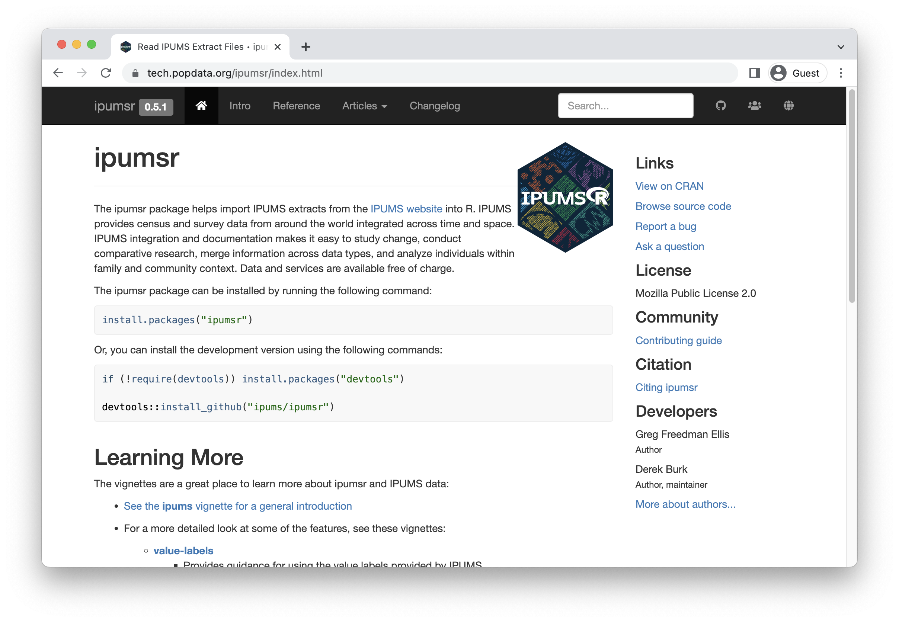

Preface
The work was commissioned and funded by the Family Planning Team at the Bill & Melinda Gates Foundation. The examples here are directly based on the companion IPUMS PMA Blog, with R examples developed by Matt Gunther and IPUMS PMA documentation by Devon Kristiansen under the management of Kathryn Grace, PhD and Elizabeth Heger Boyle, PhD at IPUMS PMA, University of Minnesota. The Stata version and statistical consulting were provided by Mia Yu, Dale Rhoda, and Caitlin Clary at Biostat Global Consulting. These authors are grateful for helpful reviews & comments from Philip Anglewicz, PhD; Linnea Zimmerman, PhD, and Aisha Siewe at Johns Hopkins University. Thanks also to Nina Brooks, PhD and Finn Roberts for code contributions and review.
Suggested Citation
TBD
Source Code
This manual is open source. It was constructed from R Markdown files with the pagedown package for R.pagedown © Xie, Yihui et al. (MIT) These files are available on our GitHub repository, where you will also find .r and .do files containing the code shown in this manual.
The IPUMS PMA data files referenced in this manual are also available at no cost, but you must register and adhere to terms of use at pma.ipums.org/register. Dataset access is granted only for non-commercial purposes. Users must register an account with IPUMS, request access to data from particular countries, and describe their intended use for the data. Users who have been approved for access to certain countries may submit justification to expand their access to other countries.
La version française du formulaire d’inscription
Hyperlinks
Hyperlinks to IPUMS PMA variable documentation, relevant R and Stata documentation, and various other resources are highlighted in pink throughout this manual. If the reader prefers a printed version, they are recommended to compile the manual from source files on our GitHub repository, changing the pagedown option described here. Warning: this will add additional footnotes to the document, and may impact pagination.
Acronyms
- BMGF - Bill & Melinda Gates Foundation
- CI - confidence interval
- CMC - century month code
- CONSORT - Consolidated Standards of Reporting Trials
- CRAN - The Comprehensive R Archive Network (statistical software)
- CSV - comma-separated values file format
- DEFF - design effect
- DEFT - root design effect (square root of DEFF)
- DRC - Democratic Republic of Congo
- EA - enumeration area
- FP - family planning
- FP2020 - Family Planning 2020
- FP2030 - Family Planning 2030
- GPS - global positioning system
- IPUMS - Integrated Public Use Microdata Series
- ISO - International Organization for Standardization
- IUD - intrauterine device
- LAM - lactational amenorrhea method of contraception
- NA - not available (R notation for a missing data element)
- NIU - not in universe
- PMA - Performance Monitoring for Action
- PPS - probability proportional to size
- SAS - statistical analysis system (statistical software)
- SPSS - statistical package for social sciences (statistical software)
1 Introduction
Performance Monitoring for Action (PMA) uses innovative mobile technology to support low-cost, rapid-turnaround surveys that monitor key health and development indicators.
PMA surveys collect longitudinal data throughout a country at the household and health facility levels by female data collectors, known as resident enumerators, using mobile phones. The survey collects information from the same women and households over time for regular tracking of progress and for understanding the drivers of contraceptive use dynamics. The data are rapidly validated, aggregated, and prepared into tables and graphs, making results quickly available to stakeholders. PMA surveys can be integrated into national monitoring and evaluation systems using a low-cost, rapid-turnaround survey platform that can be adapted and used for various health data needs.
The PMA project is implemented by local partner universities and research organizations who train and deploy the cadres of female resident enumerators.
The purpose of this manual is to provide guidance on the analysis of harmonized longitudinal data for a panel of women age 15-49 surveyed by PMA and published in partnership with IPUMS PMA. IPUMS provides census and survey products from around the world in an integrated format, making it easy to compare data from multiple countries. IPUMS PMA data are available free of charge, subject to terms and conditions: please register here to request access to the data featured in this guide.PMA data for individual countries is also available at no cost from pmadata.org. Please note that the variable names, value labels, numeric codes, and other metadata featured in this guide have been altered by IPUMS PMA to facilitate comparison across countries.
This manual provides reproducible coding examples in the statistical programming language R. Each chapter also appears as a post on the IPUMS PMA data analysis blog, where you’ll find new content posted every two weeks.
Stata users: a companion manual for IPUMS PMA longitudinal analysis is also available with coding examples written in Stata.
1.1 IPUMS PMA data in R
The first two chapters of this manual introduce new users to PMA longitudinal data and the IPUMS PMA website, respectively. After demonstrating how to obtain an IPUMS PMA data extract, the remaining chapters feature extensive data analysis examples written in R.
To follow along, you’ll need to download the appropriate version of R for your computer’s operating system at r-project.org. R is available at no cost and it runs on Windows, MacOS, and a wide variety of UNIX platforms. We also recommend downloading a free copy of RStudio, an integrated development environment (IDE) designed to make your experience with R much easier.
Individual chapters may introduce one or two R packages that provide helpful functions for longitudinal survey analysis, in particular. Two packages we feature in every chapter are ipumsr and tidyverse. You can install these and other packages featured in this guide like so:
install.packages("ipumsr")
install.packages("tidyverse")The ipumsr package is designed to help R users import and explore data extracts downloaded from IPUMS. As we’ll see, categorical variables from IPUMS require additional tools because they appear as labelled integers represented in R by a number and a label like this:
# A tibble: 4 × 2
COUNTRY n
<int+lbl> <int>
1 1 [Burkina Faso] 8257
2 2 [Congo, Democratic Republic] 6090
3 7 [Kenya] 12605
4 9 [Nigeria] 3225The tidyverse is actually a collection of packages developed in-part by contributors at RStudio. These include:
1.2 Resources for R Users
This manual focuses exclusively on longitudinal family planning data from IPUMS PMA, but the companion data analysis blog covers a wide range of topics like:
- A free online course for beginners
- New data announcements
- Data cleaning and reformatting
- Data analysis and visualization
- Spatial analysis
- Guides to PMA Service Delivery Point & Client Exit Interview data
Beyond the blog, it’s important to know where to find instructions and examples for the R packages featured in this guide. Nearly all of these packages have a dedicated website with a homepage, reference page (documentation for individual functions), collection of articles (for general instructions), and change-log (for news about updates). The ipumsr page is a great place to start:

Finally, if you’re looking for a more general introduction to R, we strongly recommend the following free resources:
- R for Data Science for beginners
- Advanced R for a deeper dive
- RSpatial for analysis with spatial data
- ggplot2 for data visualization
- R Markdown: The Definitive Guide for producing annotated code, word documents, presentations, web pages, and more
- R-bloggers for regular news and tutorials
1.3 PMA Background
Dating back to 2013, the original PMA survey design included high-frequency, cross-sectional samples of women and service delivery points collected from eleven countries participating in Family Planning 2020 (FP2020) - a global partnership that supports the rights of women and girls to decide for themselves whether, when, and how many children they want to have. These surveys were designed to monitor annual progress towards FP2020 goals via population-level estimates for several core indicators.
Beginning in 2019, PMA surveys were redesigned under a renewed partnership called Family Planning 2030 (FP2030). These new surveys have been refocused on reproductive and sexual health indicators, and they feature a longitudinal panel of women of childbearing age. This design will allow researchers to measure contraceptive dynamics and changes in women’s fertility intentions over a three year period via annual in-person interviews.In addition to these three in-person surveys, PMA also conducted telephone interviews with panel members focused on emerging issues related to the COVID-19 pandemic in 2020. These telephone surveys are already available for several countries - the IPUMS PMA blog series on PMA COVID-19 surveys covers this topic in detail.
Questions on the redesigned survey cover topics like:
- awareness, perception, knowledge, and use of contraceptive methods
- perceived quality and side effects of contraceptive methods among current users
- birth history and fertility intentions
- aspects of health service provision
- domains of empowerment
1.4 Sampling
PMA panel data includes a mixture of nationally representative and sub-nationally representative samples. The panel study consists of three data collection phases, each spaced one year apart.
As of this writing, IPUMS PMA has released data from the first two phases for four countries where Phase 1 data collection began in 2019; IPUMS PMA has released data from only the first phase for three countries where Phase 1 data collection began in August or September 2020. Phase 3 data collection and processing is currently underway.
| Sample | Phase 1 Data Collection* | Phase 1 | Phase 2 | Phase 3 |
|---|---|---|---|---|
| Burkina Faso | Dec 2019 - Mar 2020 | x | x | |
| Cote d’Ivoire | Sep 2020 - Dec 2020 | x | ||
| DRC - Kinshasa | Dec 2019 - Feb 2020 | x | x | |
| DRC - Kongo Central | Dec 2019 - Feb 2020 | x | x | |
| India - Rajasthan | Aug 2020 - Oct 2020 | x | ||
| Kenya | Nov 2019 - Dec 2019 | x | x | |
| Nigeria - Kano | Dec 2019 - Jan 2020 | x | x | |
| Nigeria - Lagos | Dec 2019 - Jan 2020 | x | x | |
| Uganda | Sep 2020 - Oct 2020 | x |
PMA uses a multi-stage clustered sample design, with stratification at the urban-rural level or by sub-region. Sample clusters - called enumeration areas (EAs) – are provided by the national statistics agency in each country.Displaced GPS coordinates for the centroid of each EA are available for most samples by request from PMA. IPUMS PMA provides shapefiles for PMA countries here. These EAs are sampled using a probability proportional to size (PPS) method relative to the population distribution in each stratum.
At Phase 1, 35 household dwellings were selected at random within each EA. Resident enumerators visited each dwelling and invited one household member to complete a Household QuestionnaireQuestionnaires administered in each country may vary from this Core Household Questionnaire - click here for details. that includes a census of all household members and visitors who stayed there during the night before the interview. Female household members and visitors aged 15-49 were then invited to complete a subsequent Phase 1 Female Questionnaire.Questionnaires administered in each country may vary from this Core Female Questionnaire - click here for details.
One year later, resident enumerators visited the same dwellings and administered a Phase 2 Household Questionnaire. A panel member in Phase 2 is any woman still age 15-49 who could be reached for a second Female Questionnaire, either because:
- she still lived there, or
- she had moved elsewhere within the study area,The “study area” is area within which resident enumerators should attempt to find panel women that have moved out of their Phase 1 dwelling. This may extend beyond the woman’s original EA as determined by in-country administrators - see PMA Phase 2 and Phase 3 Survey Protocol for details. but at least one member of the Phase 1 household remained and could help resident enumerators locate her new dwelling.In cases where no Phase 1 household members remained in the dwelling at Phase 2, women from the household are considered lost to follow-up. Chapter 3 covers this topic in detail.
Additionally, resident enumerators administered the Phase 2 Female Questionnaire to new women in sampled households who:
- reached age 15 after Phase 1
- joined the household after Phase 1
- declined the Female Questionnaire at Phase 1, but agreed to complete it at Phase 2
When you select the new Longitudinal sample option from IPUMS PMA, you’ll be able to include responses from every available phase of the study. These samples are available in either Long format (responses from each phase will be organized in separate rows) or Wide format (responses from each phase will be organized in columns).

In addition to following up with women in the panel over time, PMA also adjusted sampling so that a cross-sectional sample could be produced concurrently with each data collection phase. These samples mainly overlap with the data you’ll obtain for a particular phase in the longitudinal sample, except that replacement households were drawn from each EA where more than 10% of households from the previous phase were no longer there. Conversely, panel members who were located in a new dwelling at Phase 2 will not be represented in the cross-sectional sample drawn from that EA. These adjustments ensure that population-level indicators may be derived from cross-sectional samples in a given year, even if panel members move or are lost to follow-up.
You’ll find PMA cross-sectional samples dating back to 2013 if you select the Cross-sectional sample option from IPUMS PMA.

1.5 Inclusion Criteria for Analysis
Several chapters in this manual feature code you can use to reproduce key indicators included in the PMA Longitudinal Brief for each sample. In many cases, you’ll find separate reports available in English and French, and for both national and sub-national summaries. For reference, here are the highest-level population summaries available in English for each sample where Phase 2 IPUMS PMA data is currently available:
Panel data in these reports is limited to the de facto population of women who completed the Female Questionnaire in both Phase 1 and Phase 2. This includes women who slept in the household during the night before the interview for the Household Questionnaire. The de jure population includes women who are usual household members, but who slept elsewhere that night. In order to reproduce the findings from PMA reports, we’ll remove de jure cases recorded in the variable RESIDENT.
For example, let’s consider a Wide format data extract containing Phase 1 and Phase 2 respondents to the Female Questionnaire from Burkina Faso. We’ve downloaded such an extract and placed it in the data sub-folder of our R working directory. We’ll load ipumsr and tidyverse together with our extract.
library(ipumsr)
library(tidyverse)
dat <- read_ipums_micro(
ddi = "data/pma_00001.xml",
data = "data/pma_00001.dat.gz"
)In a Wide format data extract, a numeric suffix indicates the data collection phase associated with each variable. So, the you’ll find the the number of women who slept in the household before the Household Questionnaire for each phase reported in RESIDENT_1 and RESIDENT_2.
This extract includes 174 women who are not members of the de facto population because they did not sleep in the sampled household during the night before the Phase 1 interview:
dat %>% count(RESIDENT_1)# A tibble: 3 × 2
RESIDENT_1 n
<int+lbl> <int>
1 11 [Visitor, slept in hh last night] 106
2 21 [Usual member, did not sleep in hh last night] 174
3 22 [Usual member, slept in hh last night] 6510The extract also includes 230 women who are not members of the de facto population because they did not sleep in the sampled household during the night before the Phase 2 interview:
dat %>% count(RESIDENT_2)# A tibble: 5 × 2
RESIDENT_2 n
<int+lbl> <int>
1 11 [Visitor, slept in hh last night] 74
2 21 [Usual member, did not sleep in hh last night] 230
3 22 [Usual member, slept in hh last night] 5993
4 31 [Slept in hh last night, no response if usually lives in hh] 1
5 NA 492Moreover, there are 492 NA values in RESIDENT_2 representing women who were lost to follow-up after Phase 1. We will explain loss to follow-up in detail in Chapter 3.
The de facto population is represented in codes 11 and 22 in both of these variables. We’ll use filter to include only those cases.
defacto <- dat %>% filter(RESIDENT_1 %in% c(11, 22) & RESIDENT_2 %in% c(11, 22))
defacto %>% count(RESIDENT_1, RESIDENT_2)# A tibble: 4 × 3
RESIDENT_1 RESIDENT_2 n
<int+lbl> <int+lbl> <int>
1 11 [Visitor, slept in hh last night] 11 [Visitor, slept in hh last night] 56
2 11 [Visitor, slept in hh last night] 22 [Usual member, slept in hh last ni… 39
3 22 [Usual member, slept in hh last night] 11 [Visitor, slept in hh last night] 17
4 22 [Usual member, slept in hh last night] 22 [Usual member, slept in hh last ni… 5855Additionally, PMA reports only include women who completed (or partially completed) both Female Questionnaires. This information is reported in RESULTFQ. In our Wide extract, this information appears in RESULTFQ_1 and RESULTFQ_2: if you select the Female Respondents option at checkout, only women who completed (or partially completed) the Phase 1 Female Questionnaire will be included in your extract.

We’ll further restrict our sample by selecting only cases where RESULTFQ_2 shows that the woman also completed the Phase 2 questionnaire. Notice that, in addition to each of the value 1 through 10, there are several non-response codes numbered 90 through 99. You’ll see similar values repeated across all IPUMS PMA variables, except that they will be left-padded to match the maximum width of a particular variable (e.g. 9999 is used for INTFQYEAR, which represents a 4-digit year for the Female Interview).
dat %>% count(RESULTFQ_2)# A tibble: 11 × 2
RESULTFQ_2 n
<int+lbl> <int>
1 1 [Completed] 5491
2 2 [Not at home] 78
3 3 [Postponed] 22
4 4 [Refused] 66
5 5 [Partly completed] 12
6 7 [Respondent moved] 15
7 10 [Incapacitated] 19
8 95 [Not interviewed (female questionnaire)] 4
9 96 [Not interviewed (household questionnaire)] 192
10 99 [NIU (not in universe)] 399
11 NA 492Possible non-response codes include:
95Not interviewed (female questionnaire)96Not interviewed (household questionnaire)97Don’t know98No response or missing99NIU (not in universe)
The value NA in an IPUMS PMA extract indicates that a particular variable is not provided for a selected sample. In a Wide extract, it may also signify that a particular person was not included in the data from a particular phase. Here, an NA appearing in RESULTFQ_2 indicates that a Female Respondent from Phase 1 was not found in Phase 2.
You can drop incomplete Phase 2 female responses as follows:
completed <- dat %>% filter(RESULTFQ_2 == 1)
completed %>% count(RESULTFQ_1, RESULTFQ_2)# A tibble: 2 × 3
RESULTFQ_1 RESULTFQ_2 n
<int+lbl> <int+lbl> <int>
1 1 [Completed] 1 [Completed] 5487
2 5 [Partly completed] 1 [Completed] 4Generally, we will combine both filtering steps together in a single function like so:
dat <- dat %>%
filter(
RESIDENT_1 %in% c(11, 22) & RESIDENT_2 %in% c(11, 22),
RESULTFQ_2 == 1
) In subsequent analyses, we’ll use the remaining cases to show how PMA generates key indicators for contraceptive use status and family planning intentions and outcomes. The summary report for each country includes measures dis-aggregated by demographic variables like:
- MARSTAT - marital status
- EDUCATT and EDUCATTGEN - highest attended level of educationLevels in EDUCATT may vary by country; EDUCATTGEN recodes country-specific levels in four general categories.
- AGE - age
- WEALTHQ and WEALTHT - household wealth quintile or tertileHouseholds are divided into quintiles/tertiles relative to the distribution of an asset SCORE weighted for all sampled households. For sub-nationally-representative samples (DRC and Nigeria), separate wealth distributions are calculated for each sampled region.
- URBAN and SUBNATIONAL - geographic locationSUBNATIONAL includes sub-national regions for all sampled countries; country-specific variables are also available on the household - geography page.
1.6 Survey Design Elements
Throughout this guide, we’ll demonstrate how to incorporate PMA sampling weights and information about its stratified cluster sampling procedure into your analysis. This section describes how to use survey weights, cluster IDs, and sample strata in R.
Whether you intend to work with a new Longitudinal or Cross-sectional data extract, you’ll find the same set of sampling weights available for all PMA Family Planning surveys dating back to 2013:
- HQWEIGHT can be used to generate cross-sectional population estimates from questions on the Household Questionnaire.HQWEIGHT reflects the calculated selection probability for a household in an EA, normalized at the population-level. Users intending to estimate population-level indicators for households should restrict their sample to one person per household via LINENO - see household weighting guide for details.
- FQWEIGHT can be used to to generate cross-sectional population estimates from questions on the Female Questionnaire.FQWEIGHT adjusts HQWEIGHT for female non-response within the EA, normalized at the population-level - see female weighting guide for details.
- EAWEIGHT can be used to compare the selection probability of a particular household with that of its EA.
Additionally, PMA created a new weight, PANELWEIGHT, which should be used in longitudinal analyses spanning multiple phases, as it adjusts for loss to follow-up. PANELWEIGHT is available only for Longitudinal data extracts.
PMA sample clusters are identified by the variable EAID, while sample strata are identified by STRATA. We’ll demonstrate how to use each of these survey design elements in R below.
1.6.1 Set survey design
Throughout this guide, we’ll use tools from the srvyr package to incorporate survey design elements into our analyses.The srvyr package is a tidyverse implementation of the popular survey package for R, authored by Dr. Thomas Lumley. For thorough discussion of the types of weights available in both R and Stata, we recommend this blog post by Dr. Lumley. You can install or update srvyr like so:
install.packages("srvyr")Load srvyr for use in an R session with:
library(srvyr)Let’s return to the Wide data extract described in the previous section, which includes Phase 1 and Phase 2 Female Respondents from Burkina Faso. In the following example, we’ll show how to use IPUMS PMA survey design elements to estimate the proportion of reproductive age women in Burkina Faso who were using contraception at the time of data collection for both Phase 1 and Phase 2. In a Cross-sectional or Long format longitudinal extract, you’d find this information in the variable CP. In the Wide extract featured here, you’ll find it in CP_1 for Phase 1, and in CP_2 for Phase 2.
Here is how to count the unweighted number of sampled women using and not using contraception in both phases. (We drop 5 cases coded 99 for “NIU (not in universe)” in Phase 1).
dat <- dat %>% filter(CP_1 < 90 & CP_2 < 90)
dat %>% count(CP_1, CP_2)# A tibble: 4 × 3
CP_1 CP_2 n
<int+lbl> <int+lbl> <int>
1 0 [No] 0 [No] 2589
2 0 [No] 1 [Yes] 821
3 1 [Yes] 0 [No] 556
4 1 [Yes] 1 [Yes] 1241To estimate a population percentage, we’ll need to tell srvyr that we are working with a sample survey dataset and specify the IPUMS PMA survey design elements. This is accomplished with as_survey_design: we use PANELWEIGHT as the sampling weight. We also use EAID_1 to id the sample clusters,As we’ll see in Chapter 3, women are considered lost to follow-up if they moved outside the study area after Phase 1. Therefore, EAID_1 and EAID_2 are identical for all panel members: you can use either one to identify sample clusters. and STRATA_1 to represent sample strata.As with EAID, you may use either STRATA_1 or STRATA_2 if your analysis is restricted to panel members
Summary functions like survey_mean use information from as_survey_design to derive weighted population estimates with cluster-adjusted standard errors. The argument vartype = "ci" reports a cluster-robust 95% confidence interval,The confidence level in survey_mean can be adjusted with level (e.g. level = 0.99) while prop = TRUE and prop_method = "logit" ensure that no estimated proportion includes values beyond 0% and 100%.See svyciprop for a complete list of available adjustment methods.
dat %>%
as_survey_design(
weight = PANELWEIGHT,
id = EAID_1,
strata = STRATA_1
) %>%
summarise(
survey_mean(
CP_1 * CP_2,
vartype = "ci",
proportion = TRUE,
prop_method = "logit"
)
)# A tibble: 1 × 3
coef `_low` `_upp`
<dbl> <dbl> <dbl>
1 0.188 0.164 0.214Using the survey design information for this sample, we estimate that about 18.8% of all reproductive age women in Burkina Faso were using contraception at the time both Phase 1 and Phase 2 data were collected. We’re 95% certain that this value falls between 16.4% and 21.4%.
1.6.2 Sample strata for DRC
Importantly, the variable STRATA is not available for samples collected from DRC - Kinshasa or DRC - Kongo Central. If your extract includes any DRC sample, you’ll need to amend this variable to include one unique numeric code for each of those regions.
For example, let’s look at a different Wide extract, dat2, containing all of the samples included in this data release. Notice that STRATA_1 lists the sample strata for every COUNTRY except for DRC, where you see the value NA.
dat2 <- read_ipums_micro(
ddi = "data/pma_00002.xml",
data = "data/pma_00002.dat.gz"
)
dat2 <- dat2 %>%
filter(
RESIDENT_1 %in% c(11, 22) & RESIDENT_2 %in% c(11, 22),
RESULTFQ_2 == 1,
CP_1 < 90 & CP_2 < 90
)
dat2 %>% filter(is.na(STRATA_1)) %>% count(COUNTRY, STRATA_1)# A tibble: 1 × 3
COUNTRY STRATA_1 n
<int+lbl> <int+lbl> <int>
1 2 [Congo, Democratic Republic] NA 3478Now let’s see what happens when we try to produce population-level estimates with STRATA_1:
dat2 %>%
as_survey_design(weight = PANELWEIGHT, id = EAID_1, strata = STRATA_1) %>%
group_by(COUNTRY, GEOCD, GEONG) %>%
summarise(
survey_mean(
CP_1 * CP_2,
vartype = "ci",
proportion = TRUE,
prop_method = "logit"
)
)Error in (function (object, ...) : missing values in `strata'This fails because as_survey_design encounters NA values in STRATA_1. Fortunately, we can replace those values with numeric codes from the variable GEOCD:
dat2 %>% count(GEOCD)# A tibble: 3 × 2
GEOCD n
<int+lbl> <int>
1 1 [Kinshasa] 1967
2 2 [Kongo Central] 1511
3 NA 14227If GEOCD is not NA, we’ll use its numeric code in place of STRATA_1. Otherwise, we’d like to leave STRATA_1 unchanged. However, because both variables include value labels, we’ll first need remove them with as.numeric. To avoid confusion with the original variable STRATA_1, we’ll call our new variable STRATARC (for “strata recoded”).
dat2 <- dat2 %>%
mutate(
STRATARC = if_else(
is.na(GEOCD),
as.numeric(STRATA_1),
as.numeric(GEOCD)
)
) Notice that STRATARC replaces the NA values in STRATA_1, leaving its numeric values unchanged.
dat2 %>% count(GEOCD, STRATA_1, STRATARC)# A tibble: 28 × 4
GEOCD STRATA_1 STRATARC n
<int+lbl> <int+lbl> <dbl> <int>
1 1 [Kinshasa] NA 1 1967
2 2 [Kongo Central] NA 2 1511
3 NA 40410 [Bungoma - urban, Kenya] 40410 153
4 NA 40411 [Bungoma - rural, Kenya] 40411 488
5 NA 40412 [Kakamega - urban, Kenya] 40412 133
6 NA 40413 [Kakamega - rural, Kenya] 40413 438
7 NA 40414 [Kericho - urban, Kenya] 40414 249
8 NA 40415 [Kericho - rural, Kenya] 40415 453
9 NA 40416 [Kiambu - urban, Kenya] 40416 213
10 NA 40417 [Kiambu - rural, Kenya] 40417 311
11 NA 40418 [Kilifi - urban, Kenya] 40418 170
12 NA 40419 [Kilifi - rural, Kenya] 40419 455
13 NA 40420 [Kitui - urban, Kenya] 40420 153
14 NA 40421 [Kitui - rural, Kenya] 40421 585
15 NA 40422 [Nairobi - urban, Kenya] 40422 493
16 NA 40423 [Nandi - urban, Kenya] 40423 260
17 NA 40424 [Nandi - rural, Kenya] 40424 711
18 NA 40425 [Nyamira - urban, Kenya] 40425 143
19 NA 40426 [Nyamira - rural, Kenya] 40426 382
20 NA 40427 [Siaya - urban, Kenya] 40427 130
21 NA 40428 [Siaya - rural, Kenya] 40428 437
22 NA 40429 [West Pokot - urban, Kenya] 40429 104
23 NA 40430 [West Pokot - rural, Kenya] 40430 473
24 NA 56606 [Lagos, Nigeria] 56606 1088
25 NA 56611 [Kano - Urban] 56611 437
26 NA 56612 [Kano - Rural] 56612 561
27 NA 85401 [Urban, Burkina Faso] 85401 3053
28 NA 85402 [Rural, Burkina Faso] 85402 2154Finally, we can use the updated survey design information to estimate the proportion of women who were using contraception at both Phase 1 and Phase 2 in every sample (including those from Kinshasa and Kongo Central).
dat2 %>%
as_survey_design(weight = PANELWEIGHT, id = EAID_1, strata = STRATARC) %>%
group_by(COUNTRY, GEOCD, GEONG) %>%
summarise(
survey_mean(
CP_1 * CP_2,
vartype = "ci",
proportion = TRUE,
prop_method = "logit"
)
)# A tibble: 6 × 6
# Groups: COUNTRY, GEOCD [5]
COUNTRY GEOCD GEONG coef `_low` `_upp`
<int+lbl> <int+lbl> <int+lbl> <dbl> <dbl> <dbl>
1 1 [Burkina Faso] NA NA 0.188 0.164 0.214
2 2 [Congo, Democratic Republic] 1 [Kinshasa] NA 0.320 0.288 0.353
3 2 [Congo, Democratic Republic] 2 [Kongo Central] NA 0.268 0.215 0.329
4 7 [Kenya] NA NA 0.366 0.350 0.382
5 9 [Nigeria] NA 2 [Lagos] 0.293 0.259 0.330
6 9 [Nigeria] NA 4 [Kano] 0.0537 0.0322 0.08802 Longitudinal Data Extracts
This chapter provides a guided tour of the IPUMS PMA data extract system. While you may also access the original data directly from our partners at PMA, harmonized data from IPUMS have a few additional features. For instance, you can request an extract that:
- includes samples from multiple countries
- includes samples from multiple rounds of data collection
- are formatted in either Long or Wide format
IPUMS PMA also makes it easy to switch between multiple units of analysis covered in PMA surveys. In addition to the data featured in this guide, you’ll find surveys representing:
- Service Delivery Points (SDPs)
- Client Exit Interviews conducted at SDPs
- Participants in special surveys covering topics like COVID-19, nutrition, and maternal & newborn health
To get started with a longitudinal data extract, you’ll need to select the Family Planning topic under the Person unit of analysis.

2.1 Sample Selection
Once you’ve selected the Family Planning option, you’ll next need to choose between cross-sectional or longitudinal samples. Cross-sectional samples are selected by default; these are nationally or sub-nationally representative samples collected each year dating backward as far as 2013.

Longitudinal samples are only available from 2019 onward, and they include all of the available phases for each sampled country (sub-nationally representative samples for DRC and Nigeria are listed separately). You’ll only find longitudinal samples for countries where Phase 2 data has been made available; Phase 1 data for Cote d’Ivoire, India, and Uganda can currently be found under the Cross-sectional sample menu (Phase 2 data will be released soon!).
Clicking the Longitudinal button reveals options for either Long or Wide format. You’ll find the same samples available in either case.
Important: if you decide to change formats after selecting variables, your Data Cart will be emptied and you’ll need to begin again from scratch.

After you’ve selected one of the available longitudinal formats, choose one or more samples listed below. There are also several Sample Members options listed.

Female Respondents only includes women who completed all or part of a Female Questionnaire. This option selects all members of the panel study. In addition, it includes women who only participated in only one phase - we will demonstrate how to identify and drop these cases below.Women who completed all or part of the Female Questionnaire in more than one phase of the study are considered panel members. Women who completed it only at Phase 1 are included in a longitudinal extract, but they are not panel members. Likewise, women who completed it for the first time at Phase 2 are included, but are not panel members if they 1) will reach age 50 before Phase 3, or 2) declined the invitation to participate again in Phase 3.
Female Respondents and Female Non-respondents includes all women who were eligible to participate in a Female Questionnaire. Eligible women are those age 15-49 who were listed on the roster collected in a Household Questionnaire. If an eligible woman declined the Female Questionnaire or was not available, variables associated with that questionnaire will be coded “Not interviewed (female questionnaire)”.
Female Respondents and Household Members adds records for all other members of a Female Respondent’s household. These household members did not complete the Female Questionnaire, but were listed on the household roster provided by the respondent to a Household Questionnaire. Basic demographic variables are available for each household member, as are common wealth, water, sanitation, and other variables shared for all members of the same household.
All Cases includes all members listed on the household roster from a Household Questionnaire. If the Household Questionnaire was declined or if no respondent was available, any panel member appearing in other phases of the study will be coded “Not interviewed (household questionnaire)” for variables associated with the missing Household Questionnaire.
After you’ve selected samples and sample members for your extract, click the “Submit Sample Selections” button to return to the main data browsing menu.
2.2 Variable Selection
You can browse IPUMS PMA variables by topic or alphabetically by name, or you can search for a particular term in a variable name, label, value labels, or description.

In this example, we’ll select the Discontinuation of Family Planning topic. The availability of each associated variable is shown in a table containing all of the samples we’ve selected.
Xindicates that the variable is available for all phases/indicates that the variable is available for one phase-indicates that the variable is not available for any phase
You can click the + button to add a variable to your cart, or click a variable name to learn more.

2.2.1 Codes
Let’s take a look at the variable PREGNANT. You’ll find the variable name and label shown at the top of the page. Below, you’ll see several tabs beginning with the CODES tab. For discrete variables, this tab shows all of the available codes and value labels associated with each response. You’ll also see the same X, /, and - symbols in a table indicating the availability of each response in each sample.

Above, there are no responses for “Not interviewed (female questionnaire)” and “Not interviewed (household questionnaire)”; this is because only samples members included in a “Female Respondents” extract are displayed by default. If we instead choose “All Cases”, this variable will include those response options because we’ll include every person listed on the household roster (even if the Household or Female Questionnaire was not completed).

The symbol / again indicates that a particular response is available for some - but not all - phases of the study. For PREGNANT it indicates that one of the options was either unavailable or was not selected by any sample respondents in a particular phase. If a variable was not included in all phases of the study, all response options will be marked with this symbol. For example, consider the variable COVIDCONCERN, indicating the respondent’s level of concern about becoming infected with COVID-19.

Because Phase 1 questionnaires were administered prior to the emergence of COVID-19, this variable only appeared on Phase 2 questionnaires. The symbol / indicates limited availability across phases.
2.2.2 Variable Description
You’ll find a detailed description for each variable on the DESCRIPTION tab. This tab also indicates whether a particular question appeared on the Household or Female Questionnaire.

2.2.3 Comparability Notes
The COMPARABILITY tab describes important differences between samples. Additionally, it may contain information about similar variables appearing in DHS samples provided by IPUMS DHS.

2.2.4 Sample Universe
The UNIVERSE tab describes selection criteria for this question. In this case, there are some differences between samples:
- In DRC samples, all women aged 15-49 received this question.
- For all other samples, the question was skipped if any such woman previously indicated that she was menopausal or had a hysterectomy.

2.2.5 Availability Across Samples
The AVAILABILITY tab shows all other samples (including cross-sectional samples) where this variable is available.

2.2.6 Questionnaire Text
Finally, you’ll find the full text of each question on the QUESTIONNAIRE TEXT tab. Each phase of the survey is shown separately, and you may click the “view entire document: text” link to view the complete questionnaire for a particular sample in any given phase.

2.2.7 Checkout
Use the buttons at the top of this page to add the variable to your Data Cart, or to “VIEW CART” and begin checkout.

2.3 Data for R Users
Your Data Cart shows all of the variables you’ve selected, plus several “preselected” variables that will be automatically included in your extract. Click the “CREATE DATA EXTRACT” button to prepare your download.

2.3.1 Select a Fixed-width File
Before you submit an extract request, you’ll have the opportunity to choose a “Data Format”. R users should select a Fixed-width text file (.dat) - you’ll notice that data formatted for Stata, SPSS, and SAS are also available. CSV files are provided, but not recommended. (If you wish to change Sample Members, you may do so again here.)

Once the Fixed-width option is selected, you may add a description and then proceed to the download page.
2.3.2 Download
After a few moments, you’ll receive an email indicating that your extract has been created. You’ll need to obtain two files from the download page:
- Click the green “Download DAT” button to download the data file. You’ll receive a file with a number like
pma_00001.dat.gz.
- Right click on “DDI” and click “Save link as”. You’ll receive a corresponding XML file like
pma_00001.xml.

Place both files in a folder that R can use as its working directory. We strongly recommend using RStudio projects to manage all of the files and analysis scripts used for a particular research project. We’ll place our files in a sub-folder called “data” within our own RStudio project folder.
Open RStudio (or R) and load the packages ipumsr and tidyverse. If you are not using an RStudio project, you will need to change your working directory to match the location of your downloaded files.
library(ipumsr)
library(tidyverse)
setwd("~/Downloads") # ONLY if not using an RStudio project (change as needed)We’ll now demonstrate loading both a long and a wide extract, and we’ll take a brief look at the structure of each.
2.4 Long Data Structure
We’ve downloaded a Long data extract (Female Respondents only) and saved it in a folder called “data” in our working directory. We’ll now load it into R as an object called long.
To load an IPUMS PMA extract into R, you’ll need to reference both the DDI file and the fixed-width data file in the function read_ipums_micro from ipumsr.
long <- read_ipums_micro(
ddi = "data/pma_00095.xml",
data = "data/pma_00095.dat.gz"
)In a Long extract, data from each phase will be organized in separate rows. Here, responses from three panel members are shown:
long %>%
filter(FQINSTID %>% str_starts("011") | FQINSTID %>% str_starts("015")) %>%
arrange(FQINSTID) %>%
select(FQINSTID, PHASE, AGE, PANELWOMAN)# A tibble: 6 × 4
FQINSTID PHASE AGE PANELWOMAN
<chr> <int+lbl> <int+lbl> <int+lbl>
1 011W5S0HN91I4H4I3T9JCMBHB 1 [Baseline] 29 NA
2 011W5S0HN91I4H4I3T9JCMBHB 2 [First follow up] 30 1 [Yes]
3 015NP6FJTIA98FYCBBBS1FOF7 1 [Baseline] 47 NA
4 015NP6FJTIA98FYCBBBS1FOF7 2 [First follow up] 48 1 [Yes]
5 015WYNNO2WXHH6JA4HA9PL1MR 1 [Baseline] 20 NA
6 015WYNNO2WXHH6JA4HA9PL1MR 2 [First follow up] 21 1 [Yes] Each panel member receives a unique ID shown in FQINSTID. The variable PHASE shows that each woman’s responses to the Phase 1 Female Questionnaire appears in the first row, while her Phase 2 responses appear in the second. AGE shows each woman’s age when she completed the Female Questionnaire for each phase.
PANELWOMAN indicates whether the woman completed all or part of the Female Questionnaire in a prior phase, and that she’d agreed to continue participating in the panel study at that time. The value NA appears in the rows for Phase 1, as PANELWOMAN was not included in Phase 1 surveys.
We mentioned above that you’ll also include responses from some non-panel members when you request an extract with Female Respondents. These include women who did not complete all or part the Female Questionnaire in a prior phase, as indicated by PANELWOMAN. These women are not assigned a value for FQINSTID - instead, you’ll find an empty string:
long %>% count(PHASE, PANELWOMAN, FQINSTID == "")# A tibble: 3 × 4
PHASE PANELWOMAN `FQINSTID == ""` n
<int+lbl> <int+lbl> <lgl> <int>
1 1 [Baseline] NA FALSE 23591
2 2 [First follow up] 0 [No] TRUE 6586
3 2 [First follow up] 1 [Yes] FALSE 18194Chapter 1 describes Inclusion Criteria for Analysis and shows how to identify women in a Wide extract who did not complete the Female Questionnaire in both phases. In Long format, we use group_by to ensure that there is one row for every FQINSTID where PHASE == 1 and another row where PHASE == 2 & RESULTFQ == 1.
long <- long %>%
group_by(FQINSTID) %>%
filter(any(PHASE == 1) & any(PHASE == 2 & RESULTFQ == 1)) %>%
ungroup() The de facto population is identified where RESIDENT takes the value 11 or 22 in both rows.
long <- long %>%
group_by(FQINSTID) %>%
filter(all(RESIDENT %in% c(11, 22))) %>%
ungroup() Following these steps, you can check the size of each analytic sample like so. (Reminder: samples for DRC and Nigeria are sub-nationally representative, so we’ll show separate frequencies for each GEOCD and GEONG).
long %>% count(COUNTRY, GEOCD, GEONG, PHASE)# A tibble: 12 × 5
COUNTRY GEOCD GEONG PHASE n
<int+lbl> <int+lbl> <int+lbl> <int+lbl> <int>
1 1 [Burkina Faso] NA NA 1 [Baseline] 5212
2 1 [Burkina Faso] NA NA 2 [First follow u… 5212
3 2 [Congo, Democratic Republic] 1 [Kinshasa] NA 1 [Baseline] 1973
4 2 [Congo, Democratic Republic] 1 [Kinshasa] NA 2 [First follow u… 1973
5 2 [Congo, Democratic Republic] 2 [Kongo Central] NA 1 [Baseline] 1514
6 2 [Congo, Democratic Republic] 2 [Kongo Central] NA 2 [First follow u… 1514
7 7 [Kenya] NA NA 1 [Baseline] 6939
8 7 [Kenya] NA NA 2 [First follow u… 6939
9 9 [Nigeria] NA 2 [Lagos] 1 [Baseline] 1089
10 9 [Nigeria] NA 2 [Lagos] 2 [First follow u… 1089
11 9 [Nigeria] NA 4 [Kano] 1 [Baseline] 998
12 9 [Nigeria] NA 4 [Kano] 2 [First follow u… 9982.5 Wide Data Structure
We’ve also downloaded a Wide data extract (Female Respondents only) and saved it in the “data” folder in our working directory. We’ll also load this extract into R as an object named wide.
wide <- read_ipums_micro(
ddi = "data/pma_00084.xml",
data = "data/pma_00084.dat.gz"
)In a Wide extract, all of the responses from one woman appear in the same row. The IPUMS PMA extract system appends a numeric suffix to each variable name corresponding with the phase from which it was drawn. Consider our three example panel members again:
wide %>%
filter(FQINSTID %>% str_starts("011") | FQINSTID %>% str_starts("015")) %>%
select(FQINSTID, AGE_1, AGE_2, PANELWOMAN_1, PANELWOMAN_2)# A tibble: 3 × 5
FQINSTID AGE_1 AGE_2 PANELWOMAN_1 PANELWOMAN_2
<chr> <int+lbl> <int+lbl> <int+lbl> <int+lbl>
1 011W5S0HN91I4H4I3T9JCMBHB 29 30 NA 1 [Yes]
2 015NP6FJTIA98FYCBBBS1FOF7 47 48 NA 1 [Yes]
3 015WYNNO2WXHH6JA4HA9PL1MR 20 21 NA 1 [Yes] Each panel member has one unique ID shown in FQINSTID. However, AGE is parsed into two columns: AGE_1 shows each woman’s age at Phase 1, and AGE_2 shows her age at Phase 2.
As we’ve discussed, PANELWOMAN is not available for Phase 1, as it indicates whether the woman completed all or part of the Female Questionnaire in a prior phase. For this reason, all values in PANELWOMAN_1 are NA. Most variables are copied once for each phase, even if they - like PANELWOMAN_1 - are not available for all phases.
You might expect the total length of a Wide extract to be half the length of a corresponding Long extract. This is not the case! A Wide extract includes one row for each woman who completed all or part of the Female Questionnaire for any phase - you’ll find placeholder columns for phases where the interview was not conducted.
wide %>%
filter(FQINSTID == "0C8VQU6B03BXLAVVZ8SB90EKQ") %>%
select(RESULTFQ_1, AGE_1, RESULTFQ_2, AGE_2)# A tibble: 1 × 4
RESULTFQ_1 AGE_1 RESULTFQ_2 AGE_2
<int+lbl> <int+lbl> <int+lbl> <int+lbl>
1 1 [Completed] 31 2 [Not at home] 95 [Not interviewed (female questionnaire)]In a Long extract, rows for the missing phase are dropped. In this example, the woman was “not at home” for the Phase 2 Female Questionnaire. When we select a Long extract containing only Female Respondents, her Phase 2 row is excluded automatically (it will be included if you request an extract containing Female Respondents and Female Non-respondents).
long %>%
filter(FQINSTID == "0C8VQU6B03BXLAVVZ8SB90EKQ") %>%
select(PHASE, RESULTFQ, AGE)# A tibble: 1 × 3
PHASE RESULTFQ AGE
<int+lbl> <int+lbl> <int+lbl>
1 1 [Baseline] 1 [Completed] 31 The Inclusion Criteria for Analysis section in Chapter 1 shows how to identify members of the de facto population who completed the Female Questionnaire in both phases for a Wide extract. Those steps are repeated here:
wide <- wide %>%
filter(
RESIDENT_1 %in% c(11, 22) & RESIDENT_2 %in% c(11, 22),
RESULTFQ_2 == 1
) Following these steps, each analytic sample contains the same number of cases shown in the final Long format extract above.
wide %>% count(COUNTRY, GEOCD, GEONG) # A tibble: 6 × 4
COUNTRY GEOCD GEONG n
<int+lbl> <int+lbl> <int+lbl> <int>
1 1 [Burkina Faso] NA NA 5212
2 2 [Congo, Democratic Republic] 1 [Kinshasa] NA 1973
3 2 [Congo, Democratic Republic] 2 [Kongo Central] NA 1514
4 7 [Kenya] NA NA 6939
5 9 [Nigeria] NA 2 [Lagos] 1089
6 9 [Nigeria] NA 4 [Kano] 9982.6 Which format is best for me?
The choice between Long and Wide formats ultimately depends on your research objectives.
Many data manipulation tasks, for example, are faster and easier to perform in the Wide format. In the example above, we needed to identify women who completed a Female Questionnaire and were members of the de facto population in both phases. In the Long format, we first had to group the data by FQINSTID with group_by, thereby ensuring that a Phase 1 and Phase 2 check could be performed for each woman. In preparing for this post, this approach took about 36.5 seconds. By comparison, the same task was achieved without group_by in Wide format in just 0.16 seconds. If your workflow requires multiple comparisons between phases, the Wide format may be the best choice!
On the other hand, many of the longitudinal modeling packages available for R require data to be in a Long format - this includes both the survival package used in Chapter 6 and the lme4 package for multilevel models. Users who prefer the Wide format for data cleaning and exploration can manually switch to Long format with help from pivot_longer, for example:
wide %>% select(FQINSTID, AGE_1, PREGNANT_1, AGE_2, PREGNANT_2)# A tibble: 17,725 × 5
FQINSTID AGE_1 PREGNANT_1 AGE_2 PREGNANT_2
<chr> <int+lbl> <int+lbl> <int+lbl> <int+lbl>
1 uuid:0005f6d7-b7cd-46f6-8a6f-5f051b6ab4a2 30 0 [No] 31 0 [No]
2 uuid:0006cb76-09d1-4f2a-a92d-c12fcaf194b5 34 1 [Yes] 34 0 [No]
3 uuid:00204481-5cae-4188-abb3-0367d0ed9c14 17 0 [No] 18 0 [No]
4 uuid:002398f4-8f2d-4095-8019-c306d39cf2b9 29 0 [No] 29 0 [No]
5 uuid:00407300-c1e6-4e24-ab8d-8af5e1ca85a6 25 0 [No] 25 0 [No]
6 uuid:00413ed1-d176-44fb-a232-7e53c1db0958 32 0 [No] 32 0 [No]
7 uuid:0048a052-66ff-4ed5-9fa9-fc72e6dab696 38 0 [No] 39 0 [No]
8 uuid:004d80f0-90c6-4b77-bb4d-21d09c84fe74 38 0 [No] 38 0 [No]
9 uuid:00504cf5-870c-4a02-aad7-ea5d47b135ff 33 0 [No] 34 0 [No]
10 uuid:00534792-fb84-47b4-8606-e145d74cd089 24 0 [No] 25 0 [No]
11 uuid:0058cbb8-9892-4a60-b9ed-fb556a21f862 29 0 [No] 30 0 [No]
12 uuid:00682e93-0483-42b4-8f8d-2e0c36a26d37 16 0 [No] 17 0 [No]
# … with 17,713 more rowsWith pivot_longer, you can strip the suffix 1 or 2 from each variable, placing the result in a new column called PHASE. Then, we’ll pivot each woman’s age and pregnancy status from 2 Wide columns into a single Long one.
wide %>%
select(FQINSTID, AGE_1, PREGNANT_1, AGE_2, PREGNANT_2) %>%
pivot_longer(
!FQINSTID,
names_pattern = "(.*)_([1-2])",
names_to = c(".value", "PHASE")
)# A tibble: 35,450 × 4
FQINSTID PHASE AGE PREGNANT
<chr> <chr> <int+lbl> <int+lbl>
1 uuid:0005f6d7-b7cd-46f6-8a6f-5f051b6ab4a2 1 30 0 [No]
2 uuid:0005f6d7-b7cd-46f6-8a6f-5f051b6ab4a2 2 31 0 [No]
3 uuid:0006cb76-09d1-4f2a-a92d-c12fcaf194b5 1 34 1 [Yes]
4 uuid:0006cb76-09d1-4f2a-a92d-c12fcaf194b5 2 34 0 [No]
5 uuid:00204481-5cae-4188-abb3-0367d0ed9c14 1 17 0 [No]
6 uuid:00204481-5cae-4188-abb3-0367d0ed9c14 2 18 0 [No]
7 uuid:002398f4-8f2d-4095-8019-c306d39cf2b9 1 29 0 [No]
8 uuid:002398f4-8f2d-4095-8019-c306d39cf2b9 2 29 0 [No]
9 uuid:00407300-c1e6-4e24-ab8d-8af5e1ca85a6 1 25 0 [No]
10 uuid:00407300-c1e6-4e24-ab8d-8af5e1ca85a6 2 25 0 [No]
11 uuid:00413ed1-d176-44fb-a232-7e53c1db0958 1 32 0 [No]
12 uuid:00413ed1-d176-44fb-a232-7e53c1db0958 2 32 0 [No]
# … with 35,438 more rowsManipulating patterns in variable names with pivot_longer takes practice, and we imagine many users will find it easier to simply work with data in the Long format from the beginning.
Fortunately, the IPUMS PMA extract system makes it easy to select the samples, sample members, and variables that matter to your particular research question. Choices for Long and Wide data formats save an additional data cleaning step, allowing you to jump into longitudinal analysis as quickly as possible.
3 Panel Membership
In Chapter 1, we mentioned that PMA uses a multi-stage cluster sample design for each phase of the panel study. This means you’ll find data from a Household Questionnaire administered once each year, and you’ll find data from a subsequent Female Questionnaire collected shortly afterward. Three years - or phases - of data will be collected in total.
Because data are collected through two questionnaires administered in three phases, there are several places where incomplete or missing data may indicate loss to follow-up - dropped cases from the original panel design. At the same time, PMA uses an open panel design, whereby women who move into the study area or reach participation age after Phase 1 are permitted to join the panel at any subsequent phase.
In Chapter 3, we’ll cover these issues in detail. To illustrate, we’ll be using a Wide format data extract from IPUMS PMA that includes All cases from both currently available phases. In other words, we’ll include every member of the household roster collected in the Household Questionnaire at the start of each phase (even if no Female Questionnaire was completed by that person).
To make our explanation easier to follow, we’ll make use of a data visualization tool known in clinical research settings as a CONSORT diagram. This type of diagram is a flowchart showing enrollment and attrition points, most typically in longitudinal studies. PMA publishes a CONSORT diagram together with the User Notes for each longitudinal sample, which you can find via the links below:
We’ve constructed a single diagram showing all six samples available from IPUMS PMA, and we’ll demonstrate how to identify cases for each level in turn:

3.1 Chapter Setup
This chapter features a Wide longitudinal extract with all 6 of the available samples, including All Cases (Respondents and Non-respondents to Household and Female Questionnaires). As mentioned in Chapter 2, both phases are included with each sample when you request a longitudinal extract.

Variables describing sample composition are located under the “Technical” topics heading. Our extract will contain all of the variables in the Technical Variables and Longitudinal Panel subheadings shown:

Once you’ve finished selecting variables and downloaded an extract, you’ll receive two files: an .xml DDI codebook, and a .dat.gz data file. We’ve saved both of these files in a folder called “data” in our R Working Directory, so we’ll load them into R together with the tidyverse and ipumsr packages described in Chapter 1.
library(ipumsr)
library(tidyverse)
dat <- read_ipums_micro(
ddi = "data/pma_00086.xml",
data = "data/pma_00086.dat.gz"
)We mentioned in Chapter 1 that variables in a Wide extract include a numeric suffix corresponding with a data collection phase. For example, you’ll find two versions of SAMPLE: SAMPLE_1 represents the sample codes for Phase 1:
dat %>% count(SAMPLE_1)# A tibble: 5 × 2
SAMPLE_1 n
<int+lbl> <int>
1 18012 [Congo, Democratic Republic (Kinshasa and Kongo Central) 2019 Baseline] 19245
2 40410 [Kenya 2019 Baseline] 42708
3 56609 [Nigeria (Kano and Lagos) 2019 Baseline] 12000
4 85409 [Burkina Faso 2019 Baseline] 30357
5 NA 98687Whereas SAMPLE_2 represents the sample codes for Phase 2:
dat %>% count(SAMPLE_2)# A tibble: 5 × 2
SAMPLE_2 n
<int+lbl> <int>
1 18015 [Congo, Democratic Republic (Kinshasa and Kongo Central) 2020 Phase 2] 23186
2 40413 [Kenya 2020 Phase 2] 48975
3 56612 [Nigeria (Kano and Lagos) 2020 Phase 2] 13227
4 85412 [Burkina Faso 2021 Phase 2] 33931
5 NA 83678We also mentioned in Chapter 1 that IPUMS PMA combines sub-nationally representative samples for DRC (Kinshasa and Kongo Central) and Nigeria (Kano and Lagos) with one SAMPLE code each. Here, we’ll separate those samples and abbreviate country names. Let’s call this variable POP (for “population of interest”).
pop- Population of interest
We’ll combine the COUNTRY name for each sample together with the DRC and Nigeria regions labelled in GEOCD and GEONG, respectively.
# Abbreviate "DRC" and combine `COUNTRY` with `GEOCD` and `GEONG`
dat <- dat %>%
mutate(
across(
c(COUNTRY, GEOCD, GEONG),
~as_factor(.x) %>% as.character()
),
COUNTRY = if_else(str_detect(COUNTRY, "Congo"), "DRC", COUNTRY),
POP = case_when(
!is.na(GEOCD) ~ paste(COUNTRY, "-", GEOCD),
!is.na(GEONG) ~ paste(COUNTRY, "-", GEONG),
TRUE ~ COUNTRY
)
)
dat %>% count(POP)# A tibble: 6 × 2
POP n
<chr> <int>
1 Burkina Faso 57990
2 DRC - Kinshasa 20831
3 DRC - Kongo Central 17625
4 Kenya 83645
5 Nigeria - Kano 10970
6 Nigeria - Lagos 119363.2 Phase 1
Phase 1 marks the beginning of the PMA panel study (baseline). As we’ve mentioned, it consists of two separate questionnaires administered in stages: first, resident enumerators visited 35 household dwellings selected at random within each sample cluster, or enumeration area. If a qualifying respondent was available, they were invited to complete a Household QuestionnaireQuestionnaires administered in each country may vary from this Core Household Questionnaire - click here for details. including a census of all household members and visitors who stayed there during the night before the interview. If this census included any women aged 15-49, the enumerator would later return to the household and invite each eligible woman to complete a Female QuestionnaireQuestionnaires administered in each country may vary from this Core Female Questionnaire - click here for details. and participate in the three-year panel study.
We’ll take a look at the inclusion criteria and missing data codes for each questionnaire, in turn.
3.2.1 Household Questionnaire
In our Wide data extract, each PANELWOMAN is a woman who completed all or part of the Phase 1 Female Questionnaire and agreed to participate in the longitudinal panel study: as a result, you’ll find all of her Phase 1 responses and her Phase 2 responses together in a single row.
This is not the case for household members who are not, themselves, participants in the panel study. These household members are represented by one row per phase. For example, if a young child was listed on the Phase 1 Household Questionnaire, you’ll find details about their age in AGEHQ_1, their sex in SEX_1, and their relationship to the head of household in RELATE_1. If you look in the same row for corresponding Phase 2 variables (AGEHQ_2, SEX_2, and RELATE_2), you’ll find NA values even if the child still lived in the household at Phase 2: their Phase 2 data may be located in another row (with NA values listed for Phase 1), or it may not exist if the child was not listed on the Phase 2 household roster. It is not possible to link Phase 1 and Phase 2 responses for household members who were not participants in the panel study.
This explains why, for example, you’ll see a large number of NA values in RESULTHQ_1, which gives the result of the Phase 1 Household Questionnaire.
dat %>% count(RESULTHQ_1)# A tibble: 10 × 2
RESULTHQ_1 n
<int+lbl> <int>
1 1 [Completed] 103411
2 2 [Not at home] 210
3 3 [Postponed] 8
4 4 [Refused] 230
5 5 [Partly completed] 47
6 6 [Vacant or not a dwelling] 95
7 7 [Destroyed] 10
8 8 [Not found] 3
9 9 [Absent extended period] 296
10 NA 98687Close to half of the values in RESULTHQ_1 are NA: these are household members for whom no linked Phase 2 data exists.
What about the other values in RESULTHQ_1? You’ll notice a range of outcomes including:
1- Completed5- Partly completed- several other codes giving the reason why no household interview occurred
If no household interview occurred, PMA creates one row to represent the household in RESULTHQ_1. Otherwise, if the household roster was completed during the interview, PMA creates one row for each person on the roster.
In order to determine the proportion of households that completed all or part of the Household Questionnaire - or any other household-level statistics - you must count only one row per household. Each Phase 1 household receives a unique identifier in HHID_1 - this value is an empty string "" for household members included only in Phase 2. All Phase 1 households have a unique HHID_1, regardless of the outcome recorded in RESULTHQ_1.
Therefore, you can use group_by to find the RESULTHQ_1 outcome for each household via HHID_1. To obtain the proportion of Phase 1 households that completed all or part of the questionnaire, we’ll first use filter to drop Phase 2 households with the value "". Then, we’ll use slice to include only the first row in each household. Finally, we’ll count the number of fully (code 1) or partly (code 5) completed questionnaires in RESULTHQ_1 - the base R function prop.table derives proportions for these counts.
dat %>%
filter(HHID_1 != "") %>% # drop Phase 2 households
group_by(HHID_1) %>%
slice(1) %>% # include only one row per household
ungroup() %>%
count(RESULTHQ_1 %in% c(1, 5)) %>%
mutate(prop = prop.table(n))# A tibble: 2 × 3
`RESULTHQ_1 %in% c(1, 5)` n prop
<lgl> <int> <dbl>
1 FALSE 852 0.0365
2 TRUE 22494 0.964 It is also often useful to exclude non-interviewed households when calculating person-level statistics. In the first row of our CONSORT diagram above, we drop these households before we count the total number of sampled Phase 1 household members.
dat %>%
filter(RESULTHQ_1 %in% c(1, 5)) %>%
count(POP)# A tibble: 6 × 2
POP n
<chr> <int>
1 Burkina Faso 30210
2 DRC - Kinshasa 10309
3 DRC - Kongo Central 8847
4 Kenya 42308
5 Nigeria - Kano 5722
6 Nigeria - Lagos 60623.2.2 Female Questionnaire
IPUMS PMA uses a non-response code labeled “Not interviewed (household questionnaire)” for variables related to questions that were only relevant if the Household Questionnaire was fully or partly completed. This includes ELIGIBLE_1, which indicates whether a particular household member was a woman aged 15-49 at Phase 1, and therefore eligible for the Phase 1 Female Questionnaire. If the household was not interviewed, eligibility for the Female Questionnaire could not be determined.
dat %>% count(RESULTHQ_1, ELIGIBLE_1)# A tibble: 12 × 3
RESULTHQ_1 ELIGIBLE_1 n
<int+lbl> <int+lbl> <int>
1 1 [Completed] 0 [No] 79091
2 1 [Completed] 1 [Yes, eligible female respondent] 24320
3 2 [Not at home] 96 [Not interviewed (household questionnaire)] 210
4 3 [Postponed] 96 [Not interviewed (household questionnaire)] 8
5 4 [Refused] 96 [Not interviewed (household questionnaire)] 230
6 5 [Partly completed] 0 [No] 31
7 5 [Partly completed] 1 [Yes, eligible female respondent] 16
8 6 [Vacant or not a dwelling] 96 [Not interviewed (household questionnaire)] 95
9 7 [Destroyed] 96 [Not interviewed (household questionnaire)] 10
10 8 [Not found] 96 [Not interviewed (household questionnaire)] 3
11 9 [Absent extended period] 96 [Not interviewed (household questionnaire)] 296
12 NA NA 98687RESULTLFQ_1 shows the result of the Female Questionnaire for eligible women. The non-response code “NIU (not in universe)” is used for household members who were not eligible.
dat %>% count(RESULTFQ_1)# A tibble: 9 × 2
RESULTFQ_1 n
<int+lbl> <int>
1 1 [Completed] 23542
2 2 [Not at home] 427
3 3 [Postponed] 20
4 4 [Refused] 150
5 5 [Partly completed] 49
6 10 [Incapacitated] 145
7 96 [Not interviewed (household questionnaire)] 852
8 99 [NIU (not in universe)] 79124
9 NA 98687You can calculate the proportion of eligible women who completed the Phase 1 Female Questionnaire like so:
dat %>%
filter(ELIGIBLE_1 == 1) %>% # drop if ineligible
count(RESULTFQ_1 %in% c(1, 5)) %>%
mutate(prop = prop.table(n))# A tibble: 2 × 3
`RESULTFQ_1 %in% c(1, 5)` n prop
<lgl> <int> <dbl>
1 FALSE 745 0.0306
2 TRUE 23591 0.969 Our CONSORT diagram shows the total number of women who were eligible to participate in the panel study at Phase 1, after excluding women who:
- were members of a household where no Phase 1 Household Questionnaire was administered
- were not eligible (aged 15-49)
- did not complete at least part of the Phase 1 Female Questionnaire
dat %>%
filter(RESULTFQ_1 %in% c(1, 5)) %>%
count(POP)# A tibble: 6 × 2
POP n
<chr> <int>
1 Burkina Faso 6790
2 DRC - Kinshasa 2639
3 DRC - Kongo Central 1970
4 Kenya 9558
5 Nigeria - Kano 1127
6 Nigeria - Lagos 1507Enumerators invited these women to participate in Phase 2 of the panel study one year later. Only women who agreed to participate at that time are considered panel members at Phase 2, as shown in PANELWOMAN_2.Women who completed the Phase 1 Female Questionnaire but declined to participate in the panel were given an opportunity to join the panel again at Phase 2 (if eligible). They are not panel members as shown in PANELWOMAN_2, but they may be listed as such in PANELWOMAN_3 if they agree to participation in the panel going forward.
Their responses to the panel invitation are recorded in SURVEYWILLING_1. IPUMS PMA uses the non-response code “Not interviewed (female questionnaire)” to indicate women who were eligible, but not interviewed for the Female Questionnaire as shown in RESULTLFQ_1. Additionally, “No response or missing” is used for women who did not respond to the panel invitation.
dat %>%
filter(SURVEYWILLING_1 == 1) %>%
count(POP)# A tibble: 6 × 2
POP n
<chr> <int>
1 Burkina Faso 6597
2 DRC - Kinshasa 2578
3 DRC - Kongo Central 1920
4 Kenya 8897
5 Nigeria - Kano 1098
6 Nigeria - Lagos 1425Make sure to include “No response or missing” cases in the denominator when calculating the proportion of Phase 1 female respondents who agreed to participate in the panel follow-up:
dat %>%
filter(RESULTFQ_1 %in% c(1, 5)) %>%
count(SURVEYWILLING_1) %>%
mutate(prop = prop.table(n))# A tibble: 3 × 3
SURVEYWILLING_1 n prop
<int+lbl> <int> <dbl>
1 0 [No] 1023 0.0434
2 1 [Yes] 22515 0.954
3 98 [No response or missing] 53 0.002253.3 Phase 2
Both questionnaires were administered again in Phase 2, approximately one year after Phase 1. Resident enumerators visited the same dwellings where Phase 1 interviews occurred; if the woman’s household had moved elsewhere within the study area,The “study area” is area within which resident enumerators should attempt to find panel women that have moved out of their Phase 1 dwelling. This may extend beyond the woman’s original EA as determined by in-country administrators - see PMA Phase 2 and Phase 3 Survey Protocol for details. enumerators used local contacts to find its new location. If found, they administered a Household Questionnaire including an updated household roster.
As we’ve mentioned, any woman aged 15-49 listed on the Phase 2 household roster was eligible to complete a Phase 2 Female Questionnaire. However, only women who completed all or part of a Phase 1 Female Questionnaire are considered members of the panel in PANELWOMAN_2.
3.3.1 Household Questionnaire
Several variables are available to describe the status of households surveyed at Phase 2. As with Phase 1, RESULTHQ_2 describes the result of the Phase 2 Household Questionnaire.
dat %>% count(RESULTHQ_2)# A tibble: 10 × 2
RESULTHQ_2 n
<int+lbl> <int>
1 1 [Completed] 116955
2 2 [Not at home] 298
3 3 [Postponed] 15
4 4 [Refused] 425
5 5 [Partly completed] 16
6 6 [Vacant or not a dwelling] 861
7 7 [Destroyed] 227
8 8 [Not found] 209
9 9 [Absent extended period] 313
10 NA 83678SAMEDWELLING_2 indicates whether the Household Questionnaire was administered at the same physical dwelling from Phase 1, or whether the enumerator located the woman’s household in a new dwelling.
dat %>% count(SAMEDWELLING_2)# A tibble: 6 × 2
SAMEDWELLING_2 n
<int+lbl> <int>
1 0 [No] 7255
2 1 [Yes] 110973
3 95 [Not interviewed (female questionnaire)] 15
4 96 [Not interviewed (household questionnaire)] 19
5 99 [NIU (not in universe)] 1057
6 NA 83678Each Phase 2 sample may also include new households that were not included in Phase 1, as indicated by HHTYPE_2: these are replacement households drawn for enumeration areas where more than 10% of Phase 1 households were no longer present. They account for all of the non-response code shown in SAMEDWELLING_2, as no prior dwelling was sampled.
dat %>% count(SAMEDWELLING_2, HHTYPE_2)# A tibble: 6 × 3
SAMEDWELLING_2 HHTYPE_2 n
<int+lbl> <int+lbl> <int>
1 0 [No] 3 [Panel woman followup] 7255
2 1 [Yes] 1 [Phase 1 Dwelling] 110973
3 95 [Not interviewed (female questionnaire)] 2 [Replacement cross-section] 15
4 96 [Not interviewed (household questionnaire)] 2 [Replacement cross-section] 19
5 99 [NIU (not in universe)] 2 [Replacement cross-section] 1057
6 NA NA 83678As mentioned above, it is not possible to link Phase 1 and Phase 2 records for household members who were not women participating in the panel study. However, the variable HHMEMSTAT_2 does describe whether a Phase 1 household member was listed on the household roster for Phase 2; if not, PMA creates a Phase 2 record for that person indicating whether they moved or were deceased.
dat %>% count(HHMEMSTAT_2)# A tibble: 10 × 2
HHMEMSTAT_2 n
<int+lbl> <int>
1 1 [Still a resident in household] 84402
2 2 [Moved within EA] 1155
3 3 [Moved outside of EA] 4815
4 4 [Moved out of household for school] 1117
5 5 [Deceased] 437
6 95 [Not interviewed (female questionnaire)] 213
7 96 [Not interviewed (household questionnaire)] 2337
8 97 [Don't know] 30
9 99 [NIU (not in universe)] 24813
10 NA 83678After excluding women who reached age 50 at Phase 2, our CONSORT diagram diverges to show whether panel members were found in their Phase 1 dwelling or a new one. Women whose household was not found in the study area are considered lost to follow-up, as are those where the Phase 2 Household Questionnaire was not completed.
The variable HHPANELP2_2 indicates whether any woman who completed the Phase 1 Female Questionnaire was living in the dwelling at Phase 2. Women who were no longer residents of the household are also considered lost to follow-up.
dat %>% count(HHPANELP2_2)# A tibble: 3 × 2
HHPANELP2_2 n
<int+lbl> <int>
1 0 [No] 29587
2 1 [Yes] 89732
3 NA 836783.3.2 Female Questionnaire
Finally, eligible women who were found in a household at Phase 2 were invited to complete a Female Questionnaire. RESULTFQ_2 indicates the result of the Phase 2 Female Questionnaire both for panel members and women who were otherwise eligible to participate.
dat %>% count(RESULTFQ_2)# A tibble: 11 × 2
RESULTFQ_2 n
<int+lbl> <int>
1 1 [Completed] 24756
2 2 [Not at home] 343
3 3 [Postponed] 40
4 4 [Refused] 278
5 5 [Partly completed] 24
6 7 [Respondent moved] 57
7 10 [Incapacitated] 241
8 95 [Not interviewed (female questionnaire)] 9
9 96 [Not interviewed (household questionnaire)] 2337
10 99 [NIU (not in universe)] 91234
11 NA 83678You can find the proportion of women who completed the Phase 2 Female Questionnaire that were also available at Phase 1 (i.e. panel members) like so:
dat %>%
filter(RESULTFQ_2 == 1) %>%
count(PANELWOMAN_2) %>%
mutate(prop = prop.table(n))# A tibble: 2 × 3
PANELWOMAN_2 n prop
<int+lbl> <int> <dbl>
1 0 [No] 6576 0.266
2 1 [Yes] 18180 0.734Wide data extracts make it particularly easy to combine Phase 1 and Phase 2 variables for the same woman. Note that potential panel members were identified at Phase 1: they are women who agreed to participate in SURVEYWILLING_1 and were under age 49 in AGE_1. In order to calculate the proportion of potential panel members who ultimately completed the Female Questionnaire at Phase 2, you must include Phase 1 female respondents for whom no Phase 2 data exists.
These cases are marked NA in RESULTFQ_2, so they are easily included like so:
dat %>%
filter(SURVEYWILLING_1 == 1 & AGE_1 < 49) %>%
count(RESULTFQ_2 == 1) %>%
mutate(prop = prop.table(n))# A tibble: 3 × 3
`RESULTFQ_2 == 1` n prop
<lgl> <int> <dbl>
1 FALSE 2452 0.110
2 TRUE 18180 0.817
3 NA 1632 0.0733The final row of our CONSORT diagram shows the total number of completed Phase 2 Female Questionnaires for each sample. The totals below match the results reported in each of the PMA User Guides published for individual samples.
dat %>%
group_by(POP) %>%
filter(SURVEYWILLING_1 == 1 & AGE_1 < 49) %>%
count(final = RESULTFQ_2 == 1) %>%
mutate(prop = prop.table(n)) %>%
filter(final) %>%
select(-final)# A tibble: 6 × 3
# Groups: POP [6]
POP n prop
<chr> <int> <dbl>
1 Burkina Faso 5491 0.841
2 DRC - Kinshasa 2006 0.787
3 DRC - Kongo Central 1534 0.807
4 Kenya 7018 0.798
5 Nigeria - Kano 1001 0.923
6 Nigeria - Lagos 1130 0.8083.4 Summary
There are ultimately several causes of loss to follow-up that may occur at different time points throughout the panel study. An individual is considered lost to follow-up if:
- The household moved out of the Phase 1 dwelling, and the new dwelling could not be located within the study area
- The Phase 2 Household Questionnaire was not completed (a respondent refused, was not available, etc)
- A panel member from the household was no longer a resident (deceased, moved, or status unknown)
- A panel member did not complete a Phase 2 Household Questionnaire (she refused, was not available, etc)
At the same time, the open panel design allows new participants to complete a Female Questionnaire at any phase. These women are not panel members at Phase 2, but they may become panel members at Phase 3 if they are eligible and agree to complete a forthcoming Phase 3 Female Questionnaire. Women can join the panel at Phase 2, for example, if they:
- Reach age 15 only after Phase 1 interviews were completed
- Move into a household sampled at Phase 2
For more details on sample design, check out the IPUMS PMA sample notes and User Guides published for individual samples at pmadata.org.
4 Family Planning Indicators
In Chapter 4, we’ll demonstrate how to calculate key family planning indicators appearing in the PMA Longitudinal Brief for each of the longitudinal samples currently available from IPUMS PMA. The brief for each sample is linked below.
Indicators calculated in this chapter cover topics like:
- pregnancy intentions and outcomes
- current use of long-acting, short-acting, and traditional contraceptives
- discontinuation of family planning
- intentions for future use of family planning
- unmet need for family planning
- partner’s support for use of family planning
As we demonstrate how to calculate these indicators, we will also compare population estimates between subgroups within each sample. This chapter demonstrates how to conduct a Rao-Scott chi-square test for significant differences between subgroups, but we will primarily rely on an informal comparison of confidence intervals plotted on grouped bar charts. This approach facilitates visual comparisons for several indicators repeated for multiple samples in the same IPUMS PMA data extract, but we’ll see that it produces somewhat conservative estimation of statistical difference compared to the chi-square test. We include both the formal and the informal-visual comparison, as each is useful in the appropriate context.
This chapter demonstrates how to build a single function capable of producing several similar bar charts for multiple indicators. To do so, we’ll use the ggplot2 package loaded with the tidyverse toolkit for R. If you installed tidyverse in Chapter 1, no additional installation is necessary to use ggplot2. If not, we recommend installing the tidyverse now:
install.packages("tidyverse")4.1 Chapter Setup
Chapter 4 features a Wide longitudinal extract with all six of the available samples. Unlike Chapter 3, the data extract used in this chapter includes only Female Respondents.

Following the steps outlined in Chapter 2, you’ll need to request a .dat (fixed-width) data extract with the following variables (preselected variables are included automatically).
- RESULTFQ - Result of female questionnaire
- PANELWEIGHT - Phase 2 female panel weight
- RESIDENT - Household residence / membership
- AGE - Age in female questionnaire
- PREGNANT - Pregnancy status
- BIRTHEVENT - Number of birth events
- EDUCATTGEN - Highest level of school attended (4 categories)
- MARSTAT - Marital status
- GEOCD - Province, DRC
- GEONG - State, Nigeria
- CP - Contraceptive user
- FPCURREFFMETHRC - Most effective current FP method
- UNMETYN - Total unmet need
- FPPARTSUPPORT - Husband / partner would be supportive of FP use
- FPPLANVAL - When will start using FP method in the future - value
- FPPLANWHEN - When will start using FP method in the future - unit
- COUNTRY - PMA country (preselected)
- EAID - Enumeration area (preselected)
Download and save your extract in the data folder of your R working directory, and then load the following packages together with your extract.
library(tidyverse)
library(ipumsr)
library(srvyr)
dat <- read_ipums_micro(
ddi = "data/pma_00106.xml",
data = "data/pma_00106.dat.gz"
)Chapter 1 describes Inclusion Criteria for Analysis: to summarise, we’ll be focusing on members of the de facto population who participated in both phases of the panel study (excluding a small number of women marked “NIU (not in universe)” for a key measure of current contraceptive use recorded in CP).
dat <- dat %>%
filter(
RESIDENT_1 %in% c(11, 22) & RESIDENT_2 %in% c(11, 22),
RESULTFQ_2 == 1,
CP_1 < 90 & CP_2 < 90
)Recall that only the Burkina Faso and Kenya samples are nationally representative. Samples from DRC represent regions identified by GEOCD, while samples from Nigeria represent regions identified by GEONG. In order to distinguish each population of interest, we’ll again define a custom variable POP that shows each sample’s COUNTRY label concatenated with each of these regions where appropriate.
POP- Population of interest
dat <- dat %>%
mutate(POP = case_when(
!is.na(GEOCD) ~ paste("DRC -", as_factor(GEOCD)),
!is.na(GEONG) ~ paste("Nigeria -", as_factor(GEONG)),
TRUE ~ as_factor(COUNTRY) %>% as.character()
))We’ll be using survey design information to derive population estimates throughout this chapter, so we’ll also need to use GEOCD to update STRATA_1 for DRC samples. As in Chapter 1, we create STRATARC using unique numeric codes from STRATA_1, except that we also include unique identifiers for each sampled region in GEOCD.
STRATARC- Numeric codes for PMA sample strata (recoded for DRC samples)
dat <- dat %>%
mutate(
STRATARC = if_else(
is.na(GEOCD),
as.numeric(STRATA_1),
as.numeric(GEOCD)
)
) Finally, Chapter 1 demonstrates how to use survey design information to estimate the proportion of women in each population POP who were using a contraceptive method both at Phase 1 and at Phase 2. Let’s revisit that example again, expect that we’ll now estimate the proportion of users and non-users alike:
cp_tbl <- dat %>%
group_by(POP) %>%
summarise(
cur_data() %>%
as_survey_design(weight = PANELWEIGHT, id = EAID_1, strata = STRATARC) %>%
group_by(CP_1, CP_2) %>%
summarise(survey_mean(vartype = "ci", prop = TRUE, prop_method = "logit"))
)cp_tbl# A tibble: 24 × 6
# Groups: POP [6]
POP CP_1 CP_2 coef `_low` `_upp`
<chr> <int+lbl> <int+lbl> <dbl> <dbl> <dbl>
1 Burkina Faso 0 [No] 0 [No] 0.790 0.763 0.815
2 Burkina Faso 0 [No] 1 [Yes] 0.210 0.185 0.237
3 Burkina Faso 1 [Yes] 0 [No] 0.347 0.306 0.391
4 Burkina Faso 1 [Yes] 1 [Yes] 0.653 0.609 0.694
5 DRC - Kinshasa 0 [No] 0 [No] 0.739 0.685 0.787
6 DRC - Kinshasa 0 [No] 1 [Yes] 0.261 0.213 0.315
7 DRC - Kinshasa 1 [Yes] 0 [No] 0.275 0.239 0.314
8 DRC - Kinshasa 1 [Yes] 1 [Yes] 0.725 0.686 0.761
9 DRC - Kongo Central 0 [No] 0 [No] 0.736 0.685 0.782
10 DRC - Kongo Central 0 [No] 1 [Yes] 0.264 0.218 0.315
11 DRC - Kongo Central 1 [Yes] 0 [No] 0.270 0.207 0.343
12 DRC - Kongo Central 1 [Yes] 1 [Yes] 0.730 0.657 0.793
13 Kenya 0 [No] 0 [No] 0.697 0.676 0.717
14 Kenya 0 [No] 1 [Yes] 0.303 0.283 0.324
15 Kenya 1 [Yes] 0 [No] 0.200 0.183 0.217
16 Kenya 1 [Yes] 1 [Yes] 0.800 0.783 0.817
17 Nigeria - Kano 0 [No] 0 [No] 0.946 0.910 0.968
18 Nigeria - Kano 0 [No] 1 [Yes] 0.0544 0.0321 0.0905
19 Nigeria - Kano 1 [Yes] 0 [No] 0.440 0.308 0.581
20 Nigeria - Kano 1 [Yes] 1 [Yes] 0.560 0.419 0.692
21 Nigeria - Lagos 0 [No] 0 [No] 0.757 0.713 0.796
22 Nigeria - Lagos 0 [No] 1 [Yes] 0.243 0.204 0.287
23 Nigeria - Lagos 1 [Yes] 0 [No] 0.240 0.196 0.290
24 Nigeria - Lagos 1 [Yes] 1 [Yes] 0.760 0.710 0.804 This table cp_tbl shows a population estimate for each row reported in the column _coef, while the columns _low and _upp report the limits of a 95% confidence interval. Comparing these confidence intervals gives us an informal, conservative way to test for a significant difference between outcomes for each POP: if the intervals for any pair of outcomes in the same sample include no common values, we’ll say that a significant difference exists.
Formal testing may also reveal significant differences between pairs of outcomes where these intervals overlap only slightly. This informal comparison is well suited for data visualization, but it should not replace formal testing. Fortunately, you can adapt this code to replace (or complement) the output from survey_mean with a formal test.
4.2 Significance Test
Continuing with the previous example, we will now demonstrate how to calculate a Rao-Scott chi-square test for significant differences between the estimated population proportions for each POP and the proportions we would expect to observe if Phase 2 outcomes were statistically independent from Phase 1 conditions.The Rao-Scott second-order correction to Pearson’s chi-square test is used to incorporate survey design information from as_survey_design. Wald-type chi-square tests are also available: see svychisq for details. Because we’re interested in just one summary statistic per sample, we no longer need to group_by CP_1 and CP_2; instead, we’ll use the formula ~CP_1 + CP_2 in the function svychisq. Elements of the chi-square test can be extracted rowwise like so:
dat %>%
group_by(POP) %>%
summarise(
cur_data() %>%
as_survey_design(weight = PANELWEIGHT, id = EAID_1, strata = STRATARC) %>%
summarise(rao = svychisq(~CP_1 + CP_2, design = .) %>% list)
) %>%
rowwise() %>%
mutate(`F` = rao$statistic, p.value = rao$p.value, sig95 = p.value < 0.05)# A tibble: 6 × 5
# Rowwise:
POP rao F p.value sig95
<chr> <list> <dbl> <dbl> <lgl>
1 Burkina Faso <htest> 468. 4.62e- 50 TRUE
2 DRC - Kinshasa <htest> 216. 4.80e- 21 TRUE
3 DRC - Kongo Central <htest> 123. 9.43e- 16 TRUE
4 Kenya <htest> 1140. 8.58e-102 TRUE
5 Nigeria - Kano <htest> 89.2 2.23e- 9 TRUE
6 Nigeria - Lagos <htest> 204. 2.85e- 19 TRUE For each POP, the p.value associated with our test falls below 0.05 (as indicated in sig95). This suggests that we may be at least 95% sure that the mean Phase 2 contraceptive use status for Phase 1 contraceptive users is not identical to the mean for non-users.
4.3 Data Visualization
We’ll use simple grouped bar charts to show population estimates for each proportion calculated throughout the remainder of this chapter. We’ll also include error bars representing a 95% confidence interval for each proportion.
For example, let’s plot the estimates created in cp_tbl above. As a preliminary step, we’ll recode CP_1 and CP_2 with as_factor and sort their levels with fct_relevel. This ensures that the value labels for each variable will be printed on our plot.
cp_tbl <- cp_tbl %>%
mutate(
across(
c(CP_1, CP_2),
~.x %>% as_factor() %>% fct_relevel("No", "Yes")
)
)Next, we’ll use ggplot2 to build the plot. One of the powerful features of ggplot2 is that you can use pre-built themes to customize this baseline layout. We’ll build on theme_minimal to create our own theme_pma.This manual uses the proprietary font cabrito sans, which is implemented in figures via the showtext package for R. You can purchase a license to use cabrito sans, or substitute with a font of your choice.
theme_pma <- theme_minimal() %+replace%
theme(
text = element_text(family = "cabrito", size = 42),
plot.title = element_text(size = 72, color = "#00263A", hjust = 0,
margin = margin(b = 5)),
plot.subtitle = element_text(hjust = 0, margin = margin(b = 10)),
strip.background = element_blank(),
strip.text.y = element_text(size = 48, angle = 0),
axis.title.y = element_text(angle = 0, margin = margin(r = 10), lineheight = 0.3),
panel.spacing = unit(1, "lines")
)Because we’ll be constructing the same type of plot for each indicator, we’ll wrap this theme together with several ggplot2 functions we’ll want to reuse every time we make a plot. This prevents copy/paste errors and eliminates redundant code. We’ll call our custom function pma_bars.
We’ll design pma_bars to include all of the following ggplot2 functions:
theme_pmacreated above- labs for plot labels (passed from function arguments)
- scale_x_continuous formatting for continuous x-axis labels
- scale_y_discrete formatting for discrete y-axis labels
- geom_bar for grouped bars
- geom_errorbar for error bars
- scales::label_percent to format proportions as percentagesscales is installed, but not loaded, with the tidyverse.
pma_bars <- function(
title = NULL, # an optional title
subtitle = NULL, # an optional subtitle
xaxis = NULL, # an optional label for the x-axis (displayed above)
yaxis = NULL # an optional label for the y-axis (displayed left)
){
components <- list(
theme_pma,
labs(
title = toupper(title),
subtitle = subtitle,
y = str_wrap(yaxis, 10),
x = NULL,
fill = NULL
),
scale_x_continuous(
position = 'bottom',
sec.axis = sec_axis(trans = ~., name = xaxis, breaks = NULL),
labels = scales::label_percent()
),
scale_y_discrete(limits = rev),
geom_bar(stat = "identity", fill = "#98579BB0"),
geom_errorbar(
aes(xmin = `_low`, xmax = `_upp`),
width = 0.2,
color = "#00263A"
)
)
}Going forward, we’ll incorporate pma_bars together with a ggplot and facet function for a given set of variables like so:
cp_tbl %>%
ggplot(aes(x = coef, y = CP_2)) +
facet_grid(rows = vars(POP), cols = vars(CP_1)) +
pma_bars(
title = "Change in Contracptive Use Status",
subtitle = "A grouped bar chart, faceted by population of interest",
xaxis = "Phase 1",
yaxis = "Phase 2"
)
4.4 Contraceptive Use or Non-Use
Let’s continue our examination of CP. In the PMA reports for each sample linked above, you’ll notice that women who were pregnant at either phase are distinguished from women who reported use or non-use in CP_1 or CP_2. We’ll identify these women in the variable PREGNANT, and then we’ll create a combined indicator called FPSTATUS.
FPSTATUS- Pregnant, using contraception, or using no contraception
dat <- dat %>%
mutate(
FPSTATUS_1 = case_when(
PREGNANT_1 == 1 ~ "Pregnant",
CP_1 == 1 ~ "Using FP",
CP_1 == 0 ~ "Not Using FP"
),
FPSTATUS_2 = case_when(
PREGNANT_2 == 1 ~ "Pregnant",
CP_2 == 1 ~ "Using FP",
CP_2 == 0 ~ "Not Using FP"
),
across(
c(FPSTATUS_1, FPSTATUS_2),
~.x %>% fct_relevel("Pregnant", "Not Using FP", "Using FP")
)
)We’ll now revise cp_tbl to include information from FPSTATUS_1 and FPSTATUS_2. This will help us answer key questions like:
- Are women who were pregnant at Phase 1 more likely to use or not use family planning at Phase 2?
- Are women who were using (or not using) contraception at Phase 1 likely to maintain the same status at Phase 2?
cp_tbl <- dat %>%
group_by(POP) %>%
summarise(
cur_data() %>%
as_survey_design(weight = PANELWEIGHT, id = EAID_1, strata = STRATARC) %>%
group_by(FPSTATUS_1, FPSTATUS_2) %>%
summarise(survey_mean(vartype = "ci", prop = TRUE, prop_method = "logit"))
)This new version of cp_tbl includes the labels we assigned to FPSTATUS_1 and FPSTATUS_2. The first dozen rows are shown below.
cp_tbl# A tibble: 54 × 6
# Groups: POP [6]
POP FPSTATUS_1 FPSTATUS_2 coef `_low` `_upp`
<chr> <fct> <fct> <dbl> <dbl> <dbl>
1 Burkina Faso Pregnant Pregnant 0.0302 0.0137 0.0652
2 Burkina Faso Pregnant Not Using FP 0.568 0.491 0.642
3 Burkina Faso Pregnant Using FP 0.401 0.329 0.478
4 Burkina Faso Not Using FP Pregnant 0.0779 0.0651 0.0929
5 Burkina Faso Not Using FP Not Using FP 0.739 0.711 0.765
6 Burkina Faso Not Using FP Using FP 0.183 0.158 0.211
7 Burkina Faso Using FP Pregnant 0.0993 0.0815 0.121
8 Burkina Faso Using FP Not Using FP 0.248 0.213 0.287
9 Burkina Faso Using FP Using FP 0.653 0.609 0.694
10 DRC - Kinshasa Pregnant Pregnant 0.0367 0.0140 0.0930
11 DRC - Kinshasa Pregnant Not Using FP 0.464 0.338 0.594
12 DRC - Kinshasa Pregnant Using FP 0.500 0.370 0.629
# … with 42 more rowsNext, we’ll plot cp_tbl with pma_bars.
cp_tbl %>%
ggplot(aes(x = coef, y = FPSTATUS_2)) +
facet_grid(cols = vars(FPSTATUS_1), rows = vars(POP)) +
pma_bars(
"CHANGE IN CONTRACEPTIVE USE OR NON-USE",
"Percent women age 15-49 who changed contraceptive use status",
xaxis = "Phase 1",
yaxis = "Phase 2"
)
To reiterate: comparing the error bars within each of these 18 panels gives us a informal, but conservative test for significant difference. We’ll say that a significant difference occurs where two pairs of error bars do not overlap (but additional testing may be necessary to determine whether a significant difference occurs where error bars overlap only slightly). A few observations:
- For women who were pregnant at Phase 1, there is usually no apparent difference between using and not using family planning at Phase 2. Kenya and Nigeria - Kano are the exception: in Kenya, pregnant women at Phase 1 were appear more likely to be using FP at Phase 2, while the opposite is true in Kano.
- Overall, non-pregnant women at Phase 1 appeared more likely to maintain the same status (use or non-use) at Phase 2 than they were to switch or become pregnant.
4.5 Contraceptive Method Type
PMA surveys also ask contraceptive users to indicate which method they are currently using at each phase of the study. If a woman reports using more than one method, FPCURREFFMETH shows her most effective currently used method. These responses are combined with detailed information about use of the lactational amenorrhea method (LAM), emergency contraception, or injectable type in FPCURREFFMETHRC. PMA reports use FPCURREFFMETHRC to determine whether each woman’s most effective current method is a short-acting, long-acting, or traditional method.
Long-acting methods include:
- IUDs
- implants
- male sterilization
- female sterilization
Short-acting methods include:
- injectables (intramuscular and subcutaneous)
- the pill
- emergency contraception
- male condoms
- female condoms
- LAM
- diaphragm
- foam/jelly
- standard days method
Traditional methods include:
- rhythm
- withdrawal
- other traditional
Women who were using no method are “NIU (not in universe)”.
dat %>% count(FPCURREFFMETHRC_1)# A tibble: 19 × 2
FPCURREFFMETHRC_1 n
<int+lbl> <int>
1 101 [Female Sterilization] 198
2 102 [Male Sterilization] 1
3 111 [Implants] 2248
4 112 [IUD] 226
5 121 [Injectables (3 months)] 1412
6 123 [Injectables (Sayana Press)] 296
7 131 [Pill] 547
8 132 [Emergency Contraception] 243
9 141 [Male condom] 791
10 142 [Female condom] 1
11 151 [Diaphragm] 1
12 152 [Foam] 1
13 160 [Standard Days/Cycle Beads Method] 70
14 170 [Lactational amenorrhea method (LAM)] 24
15 210 [Rhythm] 569
16 220 [Withdrawal] 351
17 240 [Other traditional] 153
18 998 [No response or missing] 1
19 999 [NIU (not in universe)] 10572We’ll use across to recode the Phase 1 and Phase 2 versions of FPCURREFFMETHRC simultaneously. We’ll also attach the prefix CAT to each variable, indicating that we’ve created “categorized” versions of each.
CAT_FPCURREFFMETHRC- Contraceptive method type (4 categories)
dat <- dat %>%
mutate(
across(
c(FPCURREFFMETHRC_1, FPCURREFFMETHRC_2),
~case_when(
.x < 120 ~ "long-acting",
.x < 200 ~ "short-acting",
.x < 900 ~ "traditional",
TRUE ~ "none") %>%
fct_relevel( "long-acting", "short-acting", "traditional", "none"),
.names = "CAT_{.col}"
)
) Next, we’ll generate population estimates for our derived variables, CAT_FPCURREFFMETHRC_1 and CAT_FPCURREFFMETHRC_2.
meth_tbl <- dat %>%
group_by(POP) %>%
summarise(
cur_data() %>%
as_survey_design(weight = PANELWEIGHT, id = EAID_1, strata = STRATARC) %>%
group_by(CAT_FPCURREFFMETHRC_1, CAT_FPCURREFFMETHRC_2) %>%
summarise(survey_mean(vartype = "ci", prop = TRUE, prop_method = "logit"))
)
meth_tbl# A tibble: 95 × 6
# Groups: POP [6]
POP CAT_FPCURREFFMETHRC_1 CAT_FPCURREFFMETHRC_2 coef `_low` `_upp`
<chr> <fct> <fct> <dbl> <dbl> <dbl>
1 Burkina Faso long-acting long-acting 0.680 0.629 0.727
2 Burkina Faso long-acting short-acting 0.0658 0.0448 0.0955
3 Burkina Faso long-acting traditional 0.00611 0.00325 0.0115
4 Burkina Faso long-acting none 0.248 0.196 0.308
5 Burkina Faso short-acting long-acting 0.0584 0.0367 0.0917
6 Burkina Faso short-acting short-acting 0.465 0.405 0.526
7 Burkina Faso short-acting traditional 0.0328 0.0205 0.0519
8 Burkina Faso short-acting none 0.444 0.382 0.507
9 Burkina Faso traditional long-acting 0.0635 0.0215 0.174
10 Burkina Faso traditional short-acting 0.217 0.121 0.357
11 Burkina Faso traditional traditional 0.302 0.178 0.464
12 Burkina Faso traditional none 0.418 0.289 0.558
# … with 83 more rowsAnd, we’ll again use pma_bars to plot the results.
meth_tbl %>%
ggplot(aes(x = coef, y = CAT_FPCURREFFMETHRC_2)) +
facet_grid(cols = vars(CAT_FPCURREFFMETHRC_1), rows = vars(POP)) +
pma_bars(
"CHANGE IN CONTRACEPTIVE METHOD TYPE",
"Percent of women age 15-49 who changed contraceptive method or use status",
xaxis = "Phase 1",
yaxis = "Phase 2"
)
What do we learn from this plot? Let’s consider each column in turn:
- Users of “long-acting” methods at Phase 1 appear more likely to have used “long-acting” methods at Phase 2 than to have changed status (except perhaps in Kano, where the intervals for “long-acting” and “none” overlap at Phase 2).
- Users of “short-acting” methods at Phase 1 appeared generally likely to use them again at Phase 2, but some samples show that women are equally likely to be using “none” at Phase 2. A difference between these two outcomes is visually apparent only in Kinshasa, Kenya, and Lagos (where women were more likely to be using “short-acting” methods than “none”).
- The status of Phase 1 “traditional” users is generally unclear at Phase 2. In Kinshasa, Kongo Central, and Lagos, these women seem most likely to remain “traditional” users at Phase 2. Elsewhere, there are no clear trends.
- Users of “none” at Phase 1 were clearly most likely to remain as such at Phase 2.
4.6 Contraceptive Dynamics by Subgroup
We can also use FPCURREFFMETHRC to see whether women switched methods, stopped using any method, started using any method, or made no changes. Let’s summarize this information as CHG_FPCURR:
CHG_FPCURR- Change in contraceptive use between Phase 1 and Phase 2
dat <- dat %>%
mutate(
CHG_FPCURR = case_when(
FPCURREFFMETHRC_1 > 900 & FPCURREFFMETHRC_2 > 900 ~ "Continued non-use",
FPCURREFFMETHRC_1 > 900 ~ "Started using",
FPCURREFFMETHRC_2 > 900 ~ "Stopped using",
FPCURREFFMETHRC_1 != FPCURREFFMETHRC_2 ~ "Changed methods",
FPCURREFFMETHRC_1 == FPCURREFFMETHRC_2 ~ "Continued method"
)
) PMA reports disaggregate the outcomes captured in CHG_FPCURR by age, marital status, education level, and parity (number of live childbirths).
4.6.1 Age
We’ll use PMA’s categorization of AGE_2 to examine differences between women in three categories.
CAT_AGE_2- Phase 2 age (3 categories)
dat <- dat %>%
mutate(
CAT_AGE_2 = case_when(
AGE_2 < 20 ~ "15-19",
AGE_2 < 25 ~ "20-24",
TRUE ~ "25-49"
)
) Plotting CAT_AGE_2 on the y-axis allows us to compare confidence intervals across age groups. For example, notice that women aged 15-19 in every population seem more likely to continue non-use than women who are aged 20-24 or 25-49 (column 3).
dat %>%
group_by(POP) %>%
summarise(
cur_data() %>%
as_survey_design(weight = PANELWEIGHT, id = EAID_1, strata = STRATARC) %>%
group_by(CAT_AGE_2, CHG_FPCURR) %>%
summarise(survey_mean(vartype = "ci", prop = TRUE, prop_method = "logit"))
) %>%
ggplot(aes(x = coef, y = CAT_AGE_2)) +
facet_grid(cols = vars(CHG_FPCURR), rows = vars(POP)) +
pma_bars("CHANGE IN CONTRACEPTIVEUSE STATUS, BY AGE AT PHASE 2")
4.6.2 Education level
The variable EDUCATTGEN standardizes educational categories across countries (see EDUCATT for country-specific codes). To match PMA reports, we’ll recode EDUCATTGEN into just three groups:
CAT_EDUCATTGEN_2- Phase 2 education level (3 categories)
dat <- dat %>%
mutate(
CAT_EDUCATTGEN_2 = case_when(
EDUCATTGEN_2 < 3 ~ "None / Primary",
EDUCATTGEN_2 == 3 ~ "Secondary",
EDUCATTGEN_2 == 4 ~ "Tertiary"
)
) As with age, we’ll plot CAT_EDUCATTGEN_2 on the y-axis. There aren’t many clear takeaways here: confidence intervals overlap in each column for almost every education level, so visual inspection reveals no clear significant differences:
dat %>%
filter(EDUCATTGEN_2 < 90) %>% # drop if missing
group_by(POP) %>%
summarise(
cur_data() %>%
as_survey_design(weight = PANELWEIGHT, id = EAID_1, strata = STRATARC) %>%
group_by(CAT_EDUCATTGEN_2, CHG_FPCURR) %>%
summarise(survey_mean(vartype = "ci", prop = TRUE, prop_method = "logit"))
) %>%
ggplot(aes(x = coef, y = CAT_EDUCATTGEN_2)) +
facet_grid(cols = vars(CHG_FPCURR), rows = vars(POP)) +
pma_bars("CHANGE IN CONTRACEPTIVEUSE STATUS, BY EDUCATION LEVEL AT PHASE 2")
4.6.3 Marital status
The variable MARSTAT indicates each woman’s marital / partnership status. PMA considers women “in union” to be those who are currently married (code 21) or currently living with their partner (code 22). Otherwise, women who were never married, divorced / separated, or widowed are considered “not in union”.
CAT_MARSTAT_2- Phase 2 marital status (2 categories)
dat <- dat %>%
mutate(
CAT_MARSTAT_2 = case_when(
MARSTAT_2 %in% 21:22 ~ "In union",
TRUE ~ "Not in union"
)
) Here, we see that women who were not in a union at Phase 2 were significantly more likely to continue non-use of contraception compared to married / partnered women in each population. On the other hand, women who were in a union mainly appeared more likely to continue using the same method, or perhaps to change methods (most clearly in Kenya).
dat %>%
group_by(POP) %>%
summarise(
cur_data() %>%
as_survey_design(weight = PANELWEIGHT, id = EAID_1, strata = STRATARC) %>%
group_by(CAT_MARSTAT_2, CHG_FPCURR) %>%
summarise(survey_mean(vartype = "ci", prop = TRUE, prop_method = "logit"))
) %>%
ggplot(aes(x = coef, y = CAT_MARSTAT_2)) +
facet_grid(cols = vars(CHG_FPCURR), rows = vars(POP)) +
pma_bars("CHANGE IN CONTRACEPTIVE METHOD TYPE, BY MARITAL STATUS AT PHASE 2")
4.6.4 Parity
Parity refers to the number of times a women has given live birth (excluding stillbirths). This information is recorded in the IPUMS variable BIRTHEVENT, in which the values 0 and 99 (not in universe) can both be interpreted as “none”.
CAT_BIRTHEVENT_2- Phase 2 number of live births (4 categories)
dat <- dat %>%
mutate(
CAT_BIRTHEVENT_2 = case_when(
BIRTHEVENT_2 %in% c(0, 99) ~ "None",
BIRTHEVENT_2 %in% c(1, 2) ~ "One-two",
BIRTHEVENT_2 %in% c(3, 4) ~ "Three-four",
BIRTHEVENT_2 >= 5 ~ "Five +") %>%
fct_relevel("None", "One-two", "Three-four", "Five +")
) There are few clear patterns related to parity, except that women who have never given birth are also more likely to continue non-use of contraception between phases.
dat %>%
filter(BIRTHEVENT_2 != 98) %>% # drops 2 missing cases (code 98)
group_by(POP) %>%
summarise(
cur_data() %>%
as_survey_design(weight = PANELWEIGHT, id = EAID_1, strata = STRATARC) %>%
group_by(CAT_BIRTHEVENT_2, CHG_FPCURR) %>%
summarise(survey_mean(vartype = "ci", prop = TRUE, prop_method = "logit"))) %>%
ggplot(aes(x = coef, y = CAT_BIRTHEVENT_2)) +
facet_grid(cols = vars(CHG_FPCURR), rows = vars(POP)) +
pma_bars("CHANGE IN CONTRACEPTIVE METHOD TYPE, BY PARITY AT PHASE 2")
4.7 Outcomes for Phase 1 Non-users
The final page in each PMA report covers family planning dynamics related to unmet need, partner support, and plans for future use of family planning methods. In each case, we’ll be focusing on women who were not using any method at Phase 1. We’ll show how each of these dynamics impacts the likelihood that Phase 1 non-users would have adopted any family planning method at Phase 2.
dat <- dat %>% filter(CP_1 == 0)4.7.1 Unmet need
PMA defines unmet need for family planning according to each woman’s fertility preferences, current use of family planning methods, and risk factors for pregnancy. Women may have “unmet need” for birth spacing (e.g. pregnant women whose pregnancy was mistimed) or for limiting births (e.g. pregnant women whose pregnancy was unwanted), while women are considered “not at risk” if they are not sexually active or cannot become pregnant. The variable UNMETNEED provides detailed information on types of need for each woman, and on related variables that were used to calculate unmet need.
The binary variable UNMETYN recodes UNMETNEED as either “Unmet need”, or “No unmet need”. We’ll reword these labels only slightly to minimize the amount of repeated text on our plot:
dat %>%
mutate(UNMETYN_1 = if_else(UNMETYN_1 == 1, "Yes", "No")) %>%
group_by(POP) %>%
summarise(
cur_data() %>%
as_survey_design(weight = PANELWEIGHT, id = EAID_1, strata = STRATARC) %>%
group_by(UNMETYN_1, CP_2) %>%
summarise(survey_mean(vartype = "ci", prop = TRUE, prop_method = "logit"))
) %>%
filter(CP_2 == 1) %>%
ggplot(aes(x = coef, y = UNMETYN_1)) +
facet_grid(rows = vars(POP)) +
pma_bars(
"UNMET NEED FOR FAMILY PLANNING",
"Percent of women age 15-49 who were not using a method at Phase 1",
xaxis = "Phase 2: Adopted a method",
yaxis = "Phase 1: Unmet Need"
) 
Overall, these results suggest that non-users with unmet need for family planning at Phase 1 were more likely to adopt a method at Phase 2 compared to non-users who had none (e.g. women who were not sexually active, could not become pregnant, etc.). However, formal testing is needed to determine whether these trends were statistically significant in Burkina Faso and Nigeria - Kano.
4.7.2 Partner support
Women who were not using family planning and not pregnant at Phase 1 were asked whether they thought their husband / partner would be supportive of use of family planning in the future. These results are recorded in FPPARTSUPPORT. We’ll exclude non-partnered women here, as they are “NIU (not in universe)”.
dat %>%
filter(FPPARTSUPPORT_1 %in% c(0, 1, 97)) %>%
mutate(FPPARTSUPPORT_1 = FPPARTSUPPORT_1 %>% as_factor) %>%
group_by(POP) %>%
summarise(
cur_data() %>%
as_survey_design(weight = PANELWEIGHT, id = EAID_1, strata = STRATARC) %>%
group_by(FPPARTSUPPORT_1, CP_2) %>%
summarise(survey_mean(vartype = "ci", prop = TRUE, prop_method = "logit"))
) %>%
filter(CP_2 == 1) %>%
ggplot(aes(x = coef, y = FPPARTSUPPORT_1)) +
facet_grid(rows = vars(POP)) +
pma_bars(
"PARTNER SUPPORT FOR FAMILY PLANNING",
"Percent of women age 15-49 who were not using a method at Phase 1",
xaxis = "Phase 2: Adopted a method",
yaxis = "Phase 1: Partner would support FP"
)
We’ve included responses for women who were unsure whether their partner would or would not support future use of FP (“Don’t know”), but Phase 2 outcomes for these women were usually not visually distinct from those who answered “Yes” or “No”. Formal testing is needed to determine whether any significant differences exist.
Setting aside women who answered “Don’t know”, women with Phase 1 partner support in DRC - Kongo Central and Kenya (“Yes”) were more likely to adopt a method than those without (“No”). Outcomes for women in other populations are not visibly different based on partner support, one way or the other (again, formal testing may prove otherwise).
4.7.3 Intentions
Lastly, we’ll demonstrate the impact of women’s plans for future family planning use at Phase 1. The variable FPUSPLAN indicates whether women had plans for future use at any point in the future, but here we’ll consider whether women had plans to adopt a method within the next year to correspond with the timing of Phase 2 surveys.
There are two variables that describe the approximate time when women said they would adopt a family planning method (if at all). FPPLANVAL contains a raw number that should be matched with a unit of time (months, years) or a categorical response (“soon / now”, “after the birth of this child”) in FPPLANWHEN:
dat %>% count(FPPLANWHEN_1)# A tibble: 7 × 2
FPPLANWHEN_1 n
<int+lbl> <int>
1 1 [Months] 932
2 2 [Years] 3039
3 3 [Soon / Now] 685
4 4 [After the birth of this child] 338
5 97 [Don't know] 893
6 98 [No response or missing] 18
7 99 [NIU (not in universe)] 4668We’ll create FPPLANYR_1 to indicate whether each woman planned to use family planning within a year’s time at Phase 1.
FPPLANYR_1- Phase 1 plans to use FP within one year
dat <- dat %>%
mutate(
FPPLANYR_1 = case_when(
FPPLANWHEN_1 == 1 & FPPLANVAL_1 <= 12 ~ "Yes", # Within 12 months
FPPLANWHEN_1 == 2 & FPPLANVAL_1 == 1 ~ "Yes", # Within 1 year
FPPLANWHEN_1 %in% c(3, 4) ~ "Yes", # Soon / now or after current pregnancy
TRUE ~ "No" # Includes date unknown, no response, or no intention (FPUSPLAN)
)
)Our final plot shows the difference in FP adoption between women who planned to do so within the year, compared with women with no such plans.
dat %>%
group_by(POP) %>%
summarise(
cur_data() %>%
as_survey_design(weight = PANELWEIGHT, id = EAID_1, strata = STRATARC) %>%
group_by(FPPLANYR_1, CP_2) %>%
summarise(survey_mean(vartype = "ci", prop = TRUE, prop_method = "logit"))
) %>%
filter(CP_2 == 1) %>%
ggplot(aes(x = coef, y = FPPLANYR_1)) +
facet_grid(rows = vars(POP)) +
pma_bars(
"INTENTION TO USE FAMIILY PLANNING WITHIN ONE YEAR",
"Percent of women age 15-49 who were not using a method at Phase 1",
xaxis = "Phase 2: Adopted a method",
yaxis = "Phase 1: Plan to use FP"
)
In every population, Phase 1 non-users who planned to adopt a method by Phase 2 were significantly more likely to do so. However, a significant majority of Phase 1 non-users with plans to adopt a method actually did so only in Kenya, where the 95% confidence interval for “Yes” responses includes only proportions greater than the 50% threshold.
4.8 Limitations
As we’ve seen, grouped bar charts give us a simple way to identify clear differences between Phase 2 outcomes for subgroups defined by baseline family planning conditions or key demographic features. Additionally, when we facet populations of interest on the same axis, we can easily compare differences between subgroups for many samples in a single figure.
One drawback to this approach is that it’s more conservative than formal statistical tests. We are not able to easily spot differences near the conventional 95% certainty threshold. However, we demonstrated how you can adapt our code to conduct formal hypothesis tests like the Rao-Scott chi-square test for proportions in a complex survey sample.
Another drawback to this approach is that we’ve been unable to showcase estimates for the proportion of responses at any one phase of the study. For example, in our last figure, we estimated that about 35% of women who planned to use contraception within the year at Phase 1 did so at Phase 2; our figure does not show how many women planned to use contraception within the year as a share of the Phase 1 population.
To better understand the change over time relative to the size of each subgroup in our analysis, we’ll turn to a slightly more complicated data visualization method. In Chapter 5, we’ll show how to create alluvial plots, like those shown in the first two pages of each PMA report.
5 Advanced Data Visualization
In Chapter 4, we demonstrated how to calculate key family planning indicators and plot our estimates in a way that allows the reader to compare confidence intervals for each population.
Chapter 5 digs into some of the other data visualization tools that are commonly used for two-phase panel data: this will include color-coded crosstabs - or heatmaps - and alluvial plots resembling those shown in the PMA Longitudinal Brief for each panel survey.
R users can build heatmaps with the same ggplot2 package featured in Chapter 4, but alluvial plots are a bit more challenging. To make things easier, we’ll build ours with ggalluvial, an extension package for ggplot2 that includes tools designed specifically for alluvial plots.ggalluvial © Cory Brunson et al. (GPL-3)
5.1 Chapter Setup
In addition to ggalluvial, we’ll also load three packages featured throughout this manual: tidyverse, ipumsr, and srvyr.
library(tidyverse)
library(ipumsr)
library(srvyr)
library(ggalluvial)This chapter features the same data extract showcased in Chapter 4, which includes all six of the available samples. It is organized in Wide format with only Female Respondents selected. This chapter focuses on the following variables included in that extract:
- RESULTFQ - Result of female questionnaire
- PANELWEIGHT - Phase 2 female panel weight
- RESIDENT - Household residence / membership
- PREGNANT - Pregnancy status
- GEOCD - Province, DRC
- GEONG - State, Nigeria
- CP - Contraceptive user
- COUNTRY - PMA country (preselected)
- EAID - Enumeration area (preselected)
Recall that our analysis in Chapter 4 concerned only de facto panel members who completed all or part of the Female Questionnaire in both Phase 1 and Phase 2. We also excluded women who are marked “NIU (not in universe)” for a key question concerning current contraceptive use (CP). As a reminder, you can load the extract into R and select relevant cases like so:
# import the data extract and metadata files
dat <- read_ipums_micro(
ddi = "data/pma_00106.xml",
data = "data/pma_00106.dat.gz"
)
# inclusion criteria for analysis
dat <- dat %>%
filter(
RESULTFQ_2 == 1, # must have completed Phase 1 FQ
RESIDENT_1 %in% c(11, 22) & # must be de facto population (both phases)
RESIDENT_2 %in% c(11, 22),
CP_1 < 90 & CP_2 < 90 # must answer "current FP use" question (both phases)
) Additionally, we will reference four variables created in Chapter 4:
POP- Population of interestSTRATARC- Numeric codes for PMA sample strata (recoded for DRC samples)FPSTATUS_1- Pregnant, using contraception, or using no contraception at Phase 1FPSTATUS_2- Pregnant, using contraception, or using no contraception at Phase 2
These variables were created like so:
# custom variables: `POP` and `FPSTATUS`
dat <- dat %>%
mutate(
# Population of interest (country + region, where applicable)
POP = case_when(
!is.na(GEOCD) ~ paste("DRC -", as_factor(GEOCD)),
!is.na(GEONG) ~ paste("Nigeria -", as_factor(GEONG)),
TRUE ~ as_factor(COUNTRY) %>% as.character()
),
# strata: includes placeholder values for DRC regions
STRATARC = if_else(
is.na(GEOCD),
as.numeric(STRATA_1),
as.numeric(GEOCD)
),
# Family planning use-status at Phase 1
FPSTATUS_1 = case_when(
PREGNANT_1 == 1 ~ "Pregnant",
CP_1 == 1 ~ "Using FP",
CP_1 == 0 ~ "Not Using FP"
),
# Family planning use-status at Phase 2
FPSTATUS_2 = case_when(
PREGNANT_2 == 1 ~ "Pregnant",
CP_2 == 1 ~ "Using FP",
CP_2 == 0 ~ "Not Using FP"
),
# Create factors to control order of display in graphics output
across(
c(FPSTATUS_1, FPSTATUS_2),
~.x %>% fct_relevel("Pregnant", "Not Using FP", "Using FP")
)
)5.2 Grouped Bar Charts
Now let’s revisit the grouped bar chart we made to compare FPSTATUS_1 and FPSTATUS_2 for each population POP in Chapter 4. We made this chart in basically two steps.
First, we used srvyr to build a summary table that incorporates survey weights from PANELWEIGHT and generates a 95% confidence interval for each estimate. We used EAID_1 to generate the cluster-robust standard errors underlying each confidence interval, and we stratified standard error estimation by STRATARC.
Notice that we group_by FPSTATUS_1 and FPSTATUS_2 here. When we do this, survey_mean estimates the proportion of outcomes represented by the variable that appears last, which is FPSTATUS_2. The proportions sum to 1.0 for each combination of POP and FPSTATUS_1: in other words, we obtain the proportion of FPSTATUS_2 on the condition that women from a given POP held a particular status represented by FPSTATUS_1. For this reason, this is known as a conditional distribution.
status_tbl <- dat %>%
group_by(POP) %>%
summarise(
.groups = "keep",
cur_data() %>%
as_survey_design(weight = PANELWEIGHT, id = EAID_1, strata = STRATARC) %>%
group_by(FPSTATUS_1, FPSTATUS_2) %>%
summarise(survey_mean(prop = TRUE, prop_method = "logit", vartype = "ci"))
)
status_tbl# A tibble: 54 × 6
# Groups: POP [6]
POP FPSTATUS_1 FPSTATUS_2 coef `_low` `_upp`
<chr> <fct> <fct> <dbl> <dbl> <dbl>
1 Burkina Faso Pregnant Pregnant 0.0302 0.0137 0.0652
2 Burkina Faso Pregnant Not Using FP 0.568 0.491 0.642
3 Burkina Faso Pregnant Using FP 0.401 0.329 0.478
4 Burkina Faso Not Using FP Pregnant 0.0779 0.0651 0.0929
5 Burkina Faso Not Using FP Not Using FP 0.739 0.711 0.765
6 Burkina Faso Not Using FP Using FP 0.183 0.158 0.211
7 Burkina Faso Using FP Pregnant 0.0993 0.0815 0.121
8 Burkina Faso Using FP Not Using FP 0.248 0.213 0.287
9 Burkina Faso Using FP Using FP 0.653 0.609 0.694
10 DRC - Kinshasa Pregnant Pregnant 0.0367 0.0140 0.0930
# … with 44 more rowsThe grouped bar chart made in Chapter 4 plots the estimated values in coef together with the confidence interval represented by _low and _upp. This chart is useful because it packs a lot of information into a single, reader-friendly graphic. However, we also mentioned at the end of Chapter 4 that it has some considerable drawbacks. Most importantly, we weren’t able to include information from the marginal distribution in each phase.
A marginal distribution for FPSTATUS_1 would indicate the likelihood that a woman began the survey period pregnant, using family planning, or not using family planning. Likewise the marginal distribution for FPSTATUS_2 estimates the likelihood that a woman would hold any such status at Phase 2, independently of her status at Phase 1. We call these distributions “marginal” because they’re usually included in the row or column margins of a crosstab.
5.3 Heatmaps
Let’s return to status_tbl, but this time we’ll plot it as a heatmap with color and alpha (transparency) aesthetics. As in Chapter 4, we’ll design a function that combines several ggplot2 tools we’ll recycle in each plot.This manual uses the proprietary font cabrito sans, which is implemented in figures via the showtext package for R. You can purchase a license to use cabrito sans, or substitute with a font of your choice.
pma_heatmap <- function(
title = NULL, # an optional title
subtitle = NULL, # an optional subtitle
xaxis = NULL, # an optional label for the x-axis (displayed below)
yaxis = NULL # an optional label for the y-axis (displayed right)
){
components <- list(
theme_minimal() %+replace% theme(
text = element_text(family = "cabrito", size = 42, lineheight = 0.3),
plot.title = element_text(size = 64, color = "#00263A",
hjust = 0, margin = margin(b = 5)),
plot.subtitle = element_text(hjust = 0, margin = margin(b = 10)),
axis.text = element_text(size = 28),
strip.text.x = element_text(margin = margin(t = 10, b = 10)),
strip.text.y = element_text(angle = 0),
strip.background = element_blank(),
axis.title.y = element_text(angle = 0, margin = margin(l = 20), hjust = 1),
axis.title.y.right = element_text(angle = 0),
axis.title.x.bottom = element_text(margin = margin(t = 20)),
panel.grid = element_blank(),
panel.spacing = unit(1, "lines"),
legend.position = "none"
),
labs(title = title, subtitle = subtitle, x = xaxis, y = str_wrap(yaxis, 10)),
scale_fill_manual(values = c("Pregnant" = "#B4B3B3", "Not Using FP" = "#4E4F71",
"Using FP" = "#EFD372")),
scale_color_manual(values = c("black", "white")),
scale_y_discrete(position = "right", limits = rev)
)
}A simple heatmap can be built with rectangles from geom_tile and text labels from geom_text. We’ll also tell geom_tile to use one fill color for each type of response in FPSTATUS_1: this makes it easy for the reader to see that the totals in each tile sum to 100% in columns (not rows). The alpha aesthetic uses the value in coef to control the transparency of each color.
status_tbl %>%
ggplot(aes(x = FPSTATUS_1, y = FPSTATUS_2)) +
geom_tile(aes(fill = FPSTATUS_1, alpha = coef)) +
geom_text(aes(
label = scales::percent(coef, 1),
color = coef > 0.5 & FPSTATUS_1 == "Not Using FP" # white vs black text
)) +
facet_wrap(~POP, nrow = 3, scales = "fixed") +
pma_heatmap(
"CHANGE IN CONTRACEPTIVE USE OR NON-USE",
"Percent women age 15-49 who changed contraceptive use status",
xaxis = "Phase 1 Status",
yaxis = "Phase 2 Status"
) 
The nice thing about this heatmap layout is that - compared with our bar chart - it’s much easier to include data from the marginal distribution of FPSTATUS_1 and FPSTATUS_2. To do so, we’ll first need to add them to status_tbl.
First, we use group_by(FPSTATUS_1) to make the column margins and join them to status_tbl. (Note that we set vartype = NULL because we won’t be able to include confidence intervals on our heatmap.)
status_tbl <- dat %>%
group_by(POP) %>%
summarise(
cur_data() %>%
as_survey_design(weight = PANELWEIGHT, id = EAID_1, strata = STRATARC) %>%
group_by(FPSTATUS_1) %>%
summarise(cols = survey_mean(prop = TRUE, prop_method = "logit", vartype = NULL))
) %>%
full_join(status_tbl, ., by = c("POP", "FPSTATUS_1"))Next, we use group_by(FPSTATUS_2) to add row margins to status_tbl.
status_tbl <- dat %>%
group_by(POP) %>%
summarise(
cur_data() %>%
as_survey_design(weight = PANELWEIGHT, id = EAID_1, strata = STRATARC) %>%
group_by(FPSTATUS_2) %>%
summarise(rows = survey_mean(prop = TRUE, prop_method = "logit", vartype = NULL))
) %>%
full_join(status_tbl, ., by = c("POP", "FPSTATUS_2"))The column margins now appear in cols, while the row margins appear in rows.
status_tbl# A tibble: 54 × 8
# Groups: POP [6]
POP FPSTATUS_1 FPSTATUS_2 coef `_low` `_upp` cols rows
<chr> <fct> <fct> <dbl> <dbl> <dbl> <dbl> <dbl>
1 Burkina Faso Pregnant Pregnant 0.0302 0.0137 0.0652 0.0879 0.0799
2 Burkina Faso Pregnant Not Using FP 0.568 0.491 0.642 0.0879 0.583
3 Burkina Faso Pregnant Using FP 0.401 0.329 0.478 0.0879 0.337
4 Burkina Faso Not Using FP Pregnant 0.0779 0.0651 0.0929 0.624 0.0799
5 Burkina Faso Not Using FP Not Using FP 0.739 0.711 0.765 0.624 0.583
6 Burkina Faso Not Using FP Using FP 0.183 0.158 0.211 0.624 0.337
7 Burkina Faso Using FP Pregnant 0.0993 0.0815 0.121 0.288 0.0799
8 Burkina Faso Using FP Not Using FP 0.248 0.213 0.287 0.288 0.583
9 Burkina Faso Using FP Using FP 0.653 0.609 0.694 0.288 0.337
10 DRC - Kinshasa Pregnant Pregnant 0.0367 0.0140 0.0930 0.0552 0.0533
# … with 44 more rowsNow, we can simply paste these values together with the original labels from FPSTATUS_1 and FPSTATUS_2.
status_tbl %>%
ggplot(aes(
x = paste0(scales::percent(cols, 1), "\n", FPSTATUS_1) %>% as_factor,
y = paste0(scales::percent(rows, 1), "\n", FPSTATUS_2) %>% as_factor
)) +
geom_tile(aes(fill = FPSTATUS_1, alpha = coef)) +
geom_text(aes(
label = scales::percent(coef, 1),
color = coef > 0.5 & FPSTATUS_1 == "Not Using FP"
)) +
facet_wrap(~POP, nrow = 3, scales = "free") +
pma_heatmap(
"CHANGE IN CONTRACEPTIVE USE OR NON-USE",
"Percent women age 15-49 who changed contraceptive use status",
xaxis = "Phase 1 Status",
yaxis = "Phase 2 Status"
)
The information contained in our heatmap is similar to what we saw in our bar chart, except for two things:
- There are no error bars on our heatmap. If we wanted to include information about the confidence interval for each estimation, we would have to include text symbols.
- While both plots show information about the conditional distribution of
FPSTATUS_2given a starting point inFPSTATUS_1, only the heatmap includes the marginal distribution of each variable in its row and column margins.
The marginal distribution may provide crucial information about the conditional distribution that we would otherwise miss. Consider Burkina Faso, where both users and non-users of family planning at Phase 1 were generally most likely to maintain their status at Phase 2. The marginal distribution adds additional information: non-users comprise a larger share of the overall population at Phase 1.
In certain contexts, you may want to combine information from the Phase 1 marginal distribution together with the conditional distribution of outcomes at Phase 2. To continue with our example from Burkina Faso, you might report that - because non-users represent about 62% of the population, only about 11% of the population adopted family planning at Phase 2 following non-use at Phase 1. That is: 18% of 62% is 11%.
In contrast with the conditional distribution, this type of distribution describes the share of the population that experiences some combination of Phase 1 and Phase 2 outcomes without assuming a particular starting point at Phase 1. It’s known as a joint distribution because it gives the probability that two events will happen together in sequence. Let’s return to our summary table, status_tbl: to find the estimated joint distribution for each combination of FPSTATUS_1 and FPSTATUS_2, you could simply multiply each value in cols by the value in coef:
status_tbl %>% mutate(joint = cols * coef)# A tibble: 54 × 9
# Groups: POP [6]
POP FPSTATUS_1 FPSTATUS_2 coef `_low` `_upp` cols rows joint
<chr> <fct> <fct> <dbl> <dbl> <dbl> <dbl> <dbl> <dbl>
1 Burkina Faso Pregnant Pregnant 0.0302 0.0137 0.0652 0.0879 0.0799 0.00266
2 Burkina Faso Pregnant Not Using FP 0.568 0.491 0.642 0.0879 0.583 0.0499
3 Burkina Faso Pregnant Using FP 0.401 0.329 0.478 0.0879 0.337 0.0353
4 Burkina Faso Not Using FP Pregnant 0.0779 0.0651 0.0929 0.624 0.0799 0.0486
5 Burkina Faso Not Using FP Not Using FP 0.739 0.711 0.765 0.624 0.583 0.461
6 Burkina Faso Not Using FP Using FP 0.183 0.158 0.211 0.624 0.337 0.114
7 Burkina Faso Using FP Pregnant 0.0993 0.0815 0.121 0.288 0.0799 0.0286
8 Burkina Faso Using FP Not Using FP 0.248 0.213 0.287 0.288 0.583 0.0713
9 Burkina Faso Using FP Using FP 0.653 0.609 0.694 0.288 0.337 0.188
10 DRC - Kinshasa Pregnant Pregnant 0.0367 0.0140 0.0930 0.0552 0.0533 0.00203
# … with 44 more rowsIn practice, you’ll usually want to let srvyr calculate a confidence interval for each joint probability. To do so, we’ll add an interact function listing the variables in group_by that we want to model jointly.
joint_tbl <- dat %>%
group_by(POP) %>%
summarise(
.groups = "keep",
cur_data() %>%
as_survey_design(weight = PANELWEIGHT, id = EAID_1, strata = STRATARC) %>%
group_by(interact(FPSTATUS_1, FPSTATUS_2)) %>%
summarise(joint = survey_mean(prop = TRUE, prop_method = "logit", vartype = "ci"))
)
joint_tbl# A tibble: 54 × 6
# Groups: POP [6]
POP FPSTATUS_1 FPSTATUS_2 joint joint_low joint_upp
<chr> <fct> <fct> <dbl> <dbl> <dbl>
1 Burkina Faso Pregnant Pregnant 0.00266 0.00120 0.00587
2 Burkina Faso Pregnant Not Using FP 0.0499 0.0404 0.0615
3 Burkina Faso Pregnant Using FP 0.0353 0.0291 0.0427
4 Burkina Faso Not Using FP Pregnant 0.0486 0.0402 0.0588
5 Burkina Faso Not Using FP Not Using FP 0.461 0.428 0.495
6 Burkina Faso Not Using FP Using FP 0.114 0.100 0.130
7 Burkina Faso Using FP Pregnant 0.0286 0.0228 0.0357
8 Burkina Faso Using FP Not Using FP 0.0713 0.0613 0.0829
9 Burkina Faso Using FP Using FP 0.188 0.164 0.214
10 DRC - Kinshasa Pregnant Pregnant 0.00203 0.000794 0.00515
# … with 44 more rowsNow, the values in joint sum to 1.0 for each POP. Returning to our heatmap, we’ll want to use the same color for all columns, indicating that the percentages sum for 100% for each population.
joint_tbl %>%
ggplot(aes(x = FPSTATUS_1, y = FPSTATUS_2)) +
geom_tile(aes(alpha = joint), fill = "#98579B") +
geom_text(aes(
label = scales::percent(joint, 1),
color = joint > 0.5 & FPSTATUS_1 == "Not Using FP"
)) +
facet_wrap(~POP, nrow = 3, scales = "fixed") +
pma_heatmap(
"CHANGE IN CONTRACEPTIVE USE OR NON-USE",
"Percent women age 15-49 who changed contraceptive use status",
xaxis = "Phase 1 Status",
yaxis = "Phase 2 Status"
) 
Information provided by the joint distribution nuances our story a bit further. To continue with our examination of Burkina Faso: we knew that family planning users and non-users at Phase 1 were each most likely to maintain, rather than switch their status at Phase 2. However, it’s now clear that continuous non-users (non-users at both Phase 1 and Phase 2) represent a near-majority of the population.
5.4 Alluvial plots
Alluvial plots are an especially popular way to visualize longitudinal data, in part, because they combine information from each of the three distributions we’ve discussed. They also make it possible to show data from more than two variables (we’ll use them again when Phase 3 data become available). You’ll find alluvial plots on the first two pages of the PMA report for each sample.
In an alluvial plot, the marginal distribution of responses for each variable are usually plotted in vertical stacks. The ggalluvial package authors refer to these stacks as “strata”, and they may be layered onto a ggplot with geom_stratum. In our case, the strata will show the marginal distribution of women in FPSTATUS_1 and FPSTATUS_2.
The joint distribution for any pair of variables is plotted in horizontal splines called “alluvia”, which bridge the space between any given pair of strata. Alluvia are plotted with geom_flow.
Finally, we’ll use color to map each alluvium with an originating stratum from FPSTATUS_1. This will help the reader visualize the conditional distribution of FPSTATUS_2 responses given a starting point in FPSTATUS_1.
To begin, let’s revisit joint_tbl, which only contains the joint distribution for FPSTATUS_1 and FPSTATUS_2. In fact, ggalluvial will calculate the marginal distribution for both variables automatically if we reshape joint_tbl with pivot_longer like so:
joint_tbl <- joint_tbl %>%
rowid_to_column("alluvium") %>%
pivot_longer(c(FPSTATUS_1, FPSTATUS_2), names_to = "x", values_to = "stratum") %>%
mutate(x = ifelse(x == "FPSTATUS_1", "Phase 1", "Phase 2")) %>%
arrange(x, alluvium)
joint_tbl# A tibble: 108 × 7
# Groups: POP [6]
alluvium POP joint joint_low joint_upp x stratum
<int> <chr> <dbl> <dbl> <dbl> <chr> <fct>
1 1 Burkina Faso 0.00266 0.00120 0.00587 Phase 1 Pregnant
2 2 Burkina Faso 0.0499 0.0404 0.0615 Phase 1 Pregnant
3 3 Burkina Faso 0.0353 0.0291 0.0427 Phase 1 Pregnant
4 4 Burkina Faso 0.0486 0.0402 0.0588 Phase 1 Not Using FP
5 5 Burkina Faso 0.461 0.428 0.495 Phase 1 Not Using FP
6 6 Burkina Faso 0.114 0.100 0.130 Phase 1 Not Using FP
7 7 Burkina Faso 0.0286 0.0228 0.0357 Phase 1 Using FP
8 8 Burkina Faso 0.0713 0.0613 0.0829 Phase 1 Using FP
9 9 Burkina Faso 0.188 0.164 0.214 Phase 1 Using FP
10 10 DRC - Kinshasa 0.00203 0.000794 0.00515 Phase 1 Pregnant
# … with 98 more rowsHere, we create the column alluvium to hold the original row number for each of the 56 combinations of POP, FPSTATUS_1, and FPSTATUS_2. When we pivot_longer, we repeat the value in joint once for each end of the same alluvium. The values in stratum describe the strata to to which each alluvium is attached, and x indicates whether the stratum is located in the Phase 1 or Phase 2 stack.
As with our heatmap, we’ll want to define some custom layout options in a function we’ll call pma_alluvial:
pma_alluvial <- function(
title = NULL, # an optional title
subtitle = NULL, # an optional subtitle
xaxis = NULL, # an optional label for the x-axis (displayed below)
yaxis = NULL # an optional label for the y-axis (displayed left)
){
components <- list(
theme_minimal() %+replace% theme(
text = element_text(family = "cabrito", size = 42, lineheight = 0.3),
plot.title = element_text(size = 64, color = "#541E5A",
hjust = 0.5, mar = margin(b = 5)),
plot.subtitle = element_text(hjust = 0.5, margin = margin(b = 20)),
strip.background = element_blank(),
strip.text.x = element_text(margin = margin(b = 5)),
axis.text.x = element_text(color = "#541E5A", margin = margin(t = 5, b = 10)),
axis.text.y = element_blank(),
panel.spacing = unit(1, "lines"),
plot.margin = margin(0, 100, 0, 100),
legend.position = "bottom",
legend.title = element_blank(),
legend.spacing.x = unit(10, "pt"),
panel.grid = element_blank()
),
labs(
title = title,
subtitle = subtitle,
x = xaxis,
y = str_wrap(yaxis, 10),
),
scale_fill_manual(values = c(
"Pregnant" = "#B4B3B3",
"Not Using FP" = "#4E4F71",
"Using FP" = "#EFD372"
)),
scale_y_continuous(expand = c(0, 0))
)
}We’ll start by mapping common aesthetics in a ggplot function. We’ll map the values in x onto our x-axis, and we’ll map the values in joint onto the y-axis. The remaining aesthetics are specific to the functions from ggalluvial: we’ll use stratum to build vertical strata and to define colors mapped with “fill”. We also use the identifying numbers in alluvium to organize responses into alluvia.
The remaining functions are straightforward, since they mainly use information passed from ggplot. We make only one small modification to geom_stratum: setting size = 0 removes border lines that appear around each stratum, by default.
status_alluvial <- joint_tbl %>%
ggplot(aes(
x = x,
y = joint,
fill = stratum,
stratum = stratum,
alluvium = alluvium
)) +
geom_flow() +
geom_stratum(size = 0) +
facet_wrap(~POP, scales = "free_x", nrow = 1) +
pma_alluvial(
"CHANGE IN CONTRACEPTIVE USE OR NON-USE",
"Percent women age 15-49 who changed contraceptive use status",
)
status_alluvial
Of course, you should always include either y-axis gridlines or text labels for the probabilities shown on a plot like this one. We find it clearer to include the latter, which we’ll build with geom_text.
These labels are a bit tricky, but the basic idea is that you use stat = "stratum" to label strata, and stat = "flow" to label alluvia. Then, you use after_stat to build labels from statistics that ggalluvial uses to construct the plot - check out this list of available statistics for details. We’ll use the prop statistic to obtain both the marginal and joint probabilities.
status_alluvial +
geom_text(
stat = "stratum", # label strata
aes(label = ifelse(
x == 1, # labels the strata for Phase 1, otherwise blank ""
scales::percent(after_stat(prop), 1),
""
)),
nudge_x = -0.2, # nudge a bit to the left
hjust = "right", # right-justify
) +
geom_text(
stat = "stratum", # label strata
aes(label = ifelse(
x == 2, # labels the strata for Phase 2, otherwise blank ""
scales::percent(after_stat(prop), 1),
""
)),
nudge_x = 0.2, # nudge a bit to the right
hjust = "left", # left-justify
) +
geom_text(
stat = "flow", # label alluvia
aes(label = ifelse(
after_stat(flow) == "to" & # only label the destination (right-side)
after_stat(prop) >= 0.01, # hide if 0%
scales::percent(after_stat(prop), 1),
""
)),
nudge_x = -0.2, # nudge a bit to the left
hjust = "right", # right-justify
size = 8 # use a slightly smaller font
) Now, it’s easy to identify the proportion of women at each phase and the proportion who switched or maintained their status between phases.

6 Contraceptive Calendar
As we’ve seen, PMA panel surveys represent annual interviews that will ultimately include three phases of data collection. Most questions will be repeated for a total of three observations each spaced one year apart. However, some data in PMA panel surveys are reported monthly up to three years prior to the interview in each phase. These data are provided as a comma-delimited character string known as the Contraceptive Calendar.
Chapter 6 includes code you can use to parse and analyze data from the Contraceptive Calendar. These data are particularly exciting because they offer researchers an opportunity to explore longitudinal analysis techniques like survival to model the duration of events like:
- continuous use (or non-use) of a contraceptive method
- birth spacing
- pregnancies leading to birth or termination
To demonstrate, we’ll test whether women with unmet need or plans to adopt a family planning method at Phase 1 were quicker to begin using one in the months between Phase 1 and Phase 2. In R, this type of analysis is facilitated by the survival package, which can be installed from CRAN like so:
install.packages("survival")The term “survival analysis” refers to the probability that a person “survives” a particular condition for a given period of time, most commonly in clinical research settings. In the social sciences, this type of analysis is also known as “event history”, “time-to-event”, or “duration” analysis. We use the term “survival” in order to match the terminology used in the R package featured in this chapter.
There are many additional R packages available for plotting Time-to-Event curves showing the probability of survival over time.For example, see ggsurvfit. Here, we will show how to construct these figures with the same ggplot2 toolkit featured in previous chapters.
6.1 Chapter Setup
Two calendar variables are available for each country in the PMA panel study. The main calendar - which we refer to as the Contraceptive Calendar - is named as follows:
This calendar represents contraceptive use, pregnancy, pregnancy termination, and birth information for each month preceding the interview for the Female Questionnaire in a particular phase of the panel study. Women are asked to recall their status for each month in the calendar period, and their responses are recorded in a single comma-delimited string with the following codes:
B- BirthP- PregnantT- Pregnancy ended0- No family planning method used1- Female Sterilization2- Male Sterilization3- Implant4- IUD5- Injectables7- Pill8- Emergency Contraception9- Male Condom10- Female Condom11- Diaphragm12- Foam / Jelly13- Standard Days / Cycle beads14- LAM30- Rhythm method31- Withdrawal39- Other traditional methods
For example, consider a woman sampled in Kenya who gave birth during the month of the interview following 8 prior months of pregnancy. If she had used the pill every month up until the month she became pregnant, her string in CALENDARKE would look like this:
B,P,P,P,P,P,P,P,P,7,7,7,7,7,7,7,7,7,7,7,7,7,7,7,7,7,7,7,7,7,7,7,7,7,7,7
The second calendar is the Discontinuation Calendar, and it gives the reason why a woman stopped using a contraceptive method for each month following an episode of continuous use. This calendar is represented by the following variables:
Like the Contraceptive Calendar, the Discontinuation Calendar is a single comma-delimited string. It contains the following codes for months when a method was discontinued (and is blank otherwise):
1- Infrequent sex / husband away2- Became pregnant while using3- Wanted to become pregnant4- Husband / partner disapproved5- Wanted more effective method6- Side effects / health concerns7- Lack of access / too far8- Costs too much9- Inconvenient to use10- Up to God / fatalistic11- Difficult to get pregnant / menopausal12- Marital dissolution / separation96- Other
Returning to our example, if the same woman reported that she stopped using the pill because she wanted to become pregnant, her string in r_link(CALENDARKEWHY) would look like this:
,,,,,,,,,3,,,,,,,,,,,,,,,,,,,,,,,,,,
Note that the length of the string is padded by blank values before and after the only month in which this woman stopped using the pill. This ensures that all calendars in the same sample contain the same number of values including blanks. Women who were interviewed one month before the final interviews were collected, for example, will always have a blank value for the left-most space on their calendar.
However, calendars from different samples may be different lengths. In this chapter, we’ll demonstrate how to work with a data extract containing multiple samples. We will use tools from the tidyr package to separate the comma-delimited string into multiple columns, and then reshape the columns into rows with pivot_longer. tidyr is included in the tidyverse toolkit for R. Following these steps, you’ll be able to merge and analyze data from calendars collected in multiple countries covering a range of different dates.
All six of the currently available longitudinal samples are included in the data extract featured in this chapter (Female Respondents only). We’ve selected a wide format extract, so that the variables from each phase appear together in the same row. For example, the Kenya contraceptive calendar from Phase 1 is named CALENDARKE_1, while the Kenya contraceptive calendar from Phase 2 is named CALENDARKE_2.
We’ve selected all of the calendar variables listed above, plus these additional variables that we’ll need for our analysis:
- RESULTFQ - Result of female questionnaire
- FQINSTID - Unique ID for female questionnaire
- RESIDENT - Household residence / membership
- COUNTRYSTR - Country two-letter ISO code
- INTFQMON & INTFQYEAR - Date of Female Questionnaire interview
- FPCURREFFMETHRC - Most effective current family planning method (recodedThe related variable FPCURREFFMETH reports the most effective method reported by each woman. In FPCURREFFMETHRC, these responses are combined with detailed information about her use of the lactational amenorrhea method (LAM), emergency contraception, or specific types of injectable methods.)
- PREGNANT - Current pregnancy status
- UNMETYN - Total unmet need
- FPPLANVAL - When will start using FP method in the future - value
- FPPLANWHEN - When will start using FP method in the future - unit
- KID1STBIRTHMO & KID1STBIRTHYR - Date of first childbirth
- LASTBIRTHMO & LASTBIRTHYR - Date of most recent childbirth
- PANELBIRTHMO & PANELBIRTHYR - Date of childbirth during the panel study
- OTHERBIRTHMO & OTHERBIRTHYR - Date of any other childbirth during the calendar period
- PREGENDMO & PREGENDYR - Date of most recent pregnancy termination (miscarriage, abortion, or stillbirth)
- PANELPREGENDMO & PANELPREGENDYR - Date of pregnancy termination during the panel study (miscarriage, abortion, or stillbirth)
- FPBEGINUSEMO & FPBEGINUSEYR - Date of adoption for currently used family planning method
We’ll load the data extract into R together with each of the packages we’ll feature in this post. Then, *Inclusion Criteria for Analysis** described in Chapter 1, we’ll drop cases for women who did not complete the Female Questionnaire or were not members of the de facto population in both phases.
library(ipumsr)
library(tidyverse)
library(survival)
dat <- read_ipums_micro(
ddi = "data/pma_00111.xml",
data = "data/pma_00111.dat.gz") %>%
filter(RESULTFQ_2 == 1, RESIDENT_1 %in% c(11, 22) & RESIDENT_2 %in% c(11, 22))In order to make this chapter a bit easier to follow, we’re going to omit survey design information - weights and identifiers for samples clusters and strata - featured in previous chapters. R users can find several functions adapted from the survival package in the survey package, but we recommend that beginners start with the basics before confronting complex survey design.The survival function survfit used to fit a Kaplan-Meier curve in the Analysis section of this chapter is analogous to the survey function svykm, except that the latter incorporates complex survey information. For simplicity, the confidence intervals shown in this chapter do not account for cluster sampling, and may be narrower as a result.
We’ll instead organize results by country (combining sub-national samples for Nigeria and the DRC, which use the same calendar variables). Two-letter ISO codes for each country are available in the variable COUNTRYSTR_1; we’ll extract these codes with zap_labels to make a new variable called CNTRY.The same ISO codes are also available in COUNTRYSTR_2. In graphics, we’ll switch these ISO codes for readable country names extracted from the value labels in COUNTRY.
CNTRY- Country two-letter ISO code
dat <- dat %>%
mutate(
CNTRY = COUNTRYSTR_1 %>% zap_labels,
COUNTRY = COUNTRY %>%
as_factor %>%
fct_recode("DRC" = "Congo, Democratic Republic")
)
dat %>% count(CNTRY, COUNTRY)# A tibble: 4 × 3
CNTRY COUNTRY n
<chr> <fct> <int>
1 BF Burkina Faso 5212
2 CD DRC 3487
3 KE Kenya 6939
4 NG Nigeria 2087Finally, we’ll also create a short ID number for each woman, making it easier for the reader to follow the same individual’s responses throughout several reformatting steps. This is for display purposes only - in practice, the 41-character variable FQINSTID should be used as a unique identifier for each panel member.
ID- Short ID for each panel member (for display only)
dat <- dat %>% rowid_to_column("ID")6.2 Century Month Codes (CMC)
As shown above, we’ll be referencing several variables representing dates in this chapter Generally, IPUMS PMA publishes every date with two variables: one representing the month (e.g. INTFQMON) and one representing the year (e.g. INTFQYEAR). Sometimes, you’ll notice a third variable representing dates with a century month code (CMC): each CMC represents the number of months that have passed between a given date and January 1900. CMC dates are particularly useful for calculating the time between events because they replace two variables (with different units) with one simple integer.
Some CMC variables are available directly from IPUMS PMA (e.g. INTFQCMC), but we’ll create our own CMC variables for all of the dates we’ll reference in this post. CMC dates are simply calculated as follows:
\[CMC = Month + 12*(Year – 1900)\]
Because all or part of a date may be missing (the month or year), and because certain dates may be “NIU (not in universe)” (e.g. “date of most recent childbirth” for women who have never given birth), we’ll need to consider specific circumstances where we should use the value NA in a CMC variable.
In the contraceptive calendar, we’ll be measuring the time between events in months. Therefore, it would be insufficient to include cases where a woman only reported the year in which an event occurred. We’ll create a function that generates NA values if the numeric code representing a month is 90 or higher (all valid months are coded 1 through 12), and if a year is 9000 or higher (all valid years are in the 1900s or 2000s). Otherwise, we’ll use the CMC formula to calculate the appropriate CMC value for each date.
Let’s call this function make_cmc:
make_cmc <- function(mo, yr){
case_when(mo < 90 & yr < 9000 ~ mo + 12*(yr - 1900))
}You can apply make_cmc to any combination of variables representing the month and year for a date. We’ll create one CMC for each date in our data extract.
dat <- dat %>%
mutate(
INTFQCMC_1 = make_cmc(INTFQMON_1, INTFQYEAR_1),
INTFQCMC_2 = make_cmc(INTFQMON_2, INTFQYEAR_2),
KID1STBIRTHCMC_1 = make_cmc(KID1STBIRTHMO_1, KID1STBIRTHYR_1),
KID1STBIRTHCMC_2 = make_cmc(KID1STBIRTHMO_2, KID1STBIRTHYR_2),
LASTBIRTHCMC_1 = make_cmc(LASTBIRTHMO_1, LASTBIRTHYR_1),
LASTBIRTHCMC_2 = make_cmc(LASTBIRTHMO_2, LASTBIRTHYR_2),
OTHERBIRTHCMC_1 = make_cmc(OTHERBIRTHMO_1, OTHERBIRTHYR_1),
OTHERBIRTHCMC_2 = make_cmc(OTHERBIRTHMO_2, OTHERBIRTHYR_2),
PANELBIRTHCMC_1 = make_cmc(PANELBIRTHMO_1, PANELBIRTHYR_1),
PANELBIRTHCMC_2 = make_cmc(PANELBIRTHMO_2, PANELBIRTHYR_2),
PREGENDCMC_1 = make_cmc(PREGENDMO_1, PREGENDYR_1),
PREGENDCMC_2 = make_cmc(PREGENDMO_2, PREGENDYR_2),
PANELPREGENDCMC_1 = make_cmc(PANELPREGENDMO_1, PANELPREGENDYR_1),
PANELPREGENDCMC_2 = make_cmc(PANELPREGENDMO_2, PANELPREGENDYR_2),
FPBEGINUSECMC_1 = make_cmc(FPBEGINUSEMO_1, FPBEGINUSEYR_1),
FPBEGINUSECMC_2 = make_cmc(FPBEGINUSEMO_2, FPBEGINUSEYR_2)
) Let’s check our work. For example, consider how we’ve handled PANELBIRTHCMC_2 - the date of a woman’s childbirth that happened during the panel study. If we count the dates by PANELBIRTHMO_2 and use tail to examine the last few rows, we see that one woman reported code 97 indicating that she did not know the precise month of birth. Meanwhile, there were 15,064 cases coded 99 indicating that they were “NIU (not in universe)” (no birth occurred during the panel study). We’ve coded both of these case types with the value NA; all other values follow the CMC formula to count the number of months between January 1900 and the month of birth.
dat %>%
count(PANELBIRTHMO_2, PANELBIRTHYR_2, PANELBIRTHCMC_2) %>%
tail()# A tibble: 6 × 4
PANELBIRTHMO_2 PANELBIRTHYR_2 PANELBIRTHCMC_2 n
<int+lbl> <int+lbl> <dbl> <int>
1 12 [December] 2017 1416 1
2 12 [December] 2018 1428 13
3 12 [December] 2019 1440 99
4 12 [December] 2020 1452 90
5 97 [Don't know] 2017 NA 1
6 99 [NIU (not in universe)] 9999 [NIU (not in universe)] NA 150746.3 Calendar Length
You may be wondering: why does IPUMS PMA publish a separate calendar variable for each country?
This is because the width of each calendar variable differs according to the number of months women were asked to recall in a particular sample. This, in turn, depends on the range of dates in which women were interviewed for the Female Questionnaire in a particular phase.
You can find the precise range of dates included in each calendar on the description tab for each country’s calendar variable. Here, for example, we see that the Kenya Phase 1 sample includes dates from January 2017 to the month of the interview, and that its Phase 2 sample includes dates from January 2018 to the month of the interview. Note: the two calendars overlap between January 2018 and the Phase 1 interview.

The first month in each country’s calendar is listed below:
| Country | Phase 1 | Phase 2 |
|---|---|---|
| Burkina Faso | Jan 2018 | Jan 2018 |
| DRC | Jan 2017 | Jan 2018 |
| Kenya | Jan 2017 | Jan 2018 |
| Nigeria | Jan 2017 | Jan 2018 |
All women in the same sample were asked to recall events dating backward to a common start date (always in January, as shown above). However, the length of each woman’s calendar will vary depending on the date of her interview. Interviews were collected over a period of months shown in the table below.
| Country | Phase 1 | Phase 2 |
|---|---|---|
| Burkina Faso | Dec 2019 - Mar 2020 | Dec 2020 - Apr 2021 |
| DRC | Dec 2019 - Feb 2020 | Dec 2020 - Mar 2021 |
| Kenya | Nov 2019 - Dec 2019 | Nov 2020 - Dec 2020 |
| Nigeria | Dec 2019 - Jan 2020 | Dec 2020 - Feb 2021 |
To determine the precise length of each woman’s calendar, we’ll need to create variables for the CMC date of its first month in CALSTART_1 and CALSTART_2, and also for the CMC date of its last month in CALSTOP_1 and CALSTOP_2.
CALSTART_1- CMC for a woman’s first calendar month in Phase 1CALSTOP_1- CMC for a woman’s last calendar month in Phase 1CALSTART_2- CMC for a woman’s first calendar month in Phase 2CALSTOP_2- CMC for a woman’s last calendar month in Phase 2
We’ll manually set CALSTART_1 and CALSTART_2 like so:
dat <- dat %>%
mutate(
CALSTART_1 = if_else(CNTRY == "BF", 2018, 2017),
CALSTART_2 = 2018,
across(c(CALSTART_1, CALSTART_2), ~12*(.x - 1900) + 1)
) CALSTOP_1 and CALSTOP_2 can be copied directly from the dates we made above for INTFQCMC_1 and INTFQCMC_2.
dat <- dat %>%
mutate(
CALSTOP_1 = INTFQCMC_1,
CALSTOP_2 = INTFQCMC_2
)6.4 Formatting Calendar Strings
Now that we know the appropriate dates for each value in all calendar variables, we’ll begin separating each string into columns. As a first step, we’ll want to use pivot_longer to align all of the calendars assigned to different countries. Let’s call our reformatted data frame cals. For now, it will only include ID, CNTRY, and all variables that start with CAL.
cals <- dat %>% select(ID, CNTRY, starts_with("CAL"))Notice that the first few rows of our dataset represent women from Burkina Faso. Their values for variables like CALENDARKE_1 are blank; only the variables for Burkina Faso contain comma-delimited values.
cals %>% select(ID, CNTRY, CALENDARKE_1, CALENDARBF_1)# A tibble: 17,725 × 4
ID CNTRY CALENDARKE_1 CALENDARBF_1
<int> <chr> <chr+lbl> <chr+lbl>
1 1 BF "" ,,,,,,,,,,0,0,0,0,0,0,0,0,0,0,0,0,B,P,P,P,P,P,P,P,P…
2 2 BF "" ,,,,,,,,,,,P,P,P,P,P,P,P,0,0,0,0,0,0,0,3,3,3,3,3,3,…
3 3 BF "" ,,,,,,,,,,,0,0,0,0,0,0,0,0,0,0,0,0,0,0,0,0,0,0,0,0,…
4 4 BF "" ,,,,,,,,,,,0,0,0,5,5,5,5,5,5,5,5,5,5,5,0,0,0,0,0,0,…
5 5 BF "" ,,,,,,,,,,,0,0,0,0,0,0,0,0,0,0,0,0,0,0,0,0,0,0,0,B,…
6 6 BF "" ,,,,,,,,,,,0,0,0,0,0,0,0,0,0,0,0,0,0,0,0,0,0,0,0,0,…
7 7 BF "" ,,,,,,,,,,,0,0,0,0,0,0,0,0,0,0,0,0,0,T,P,P,P,P,P,P,…
8 8 BF "" ,,,,,,,,,,,B,P,P,P,P,P,P,P,P,P,0,0,0,0,0,0,0,0,0,0,…
9 9 BF "" ,,,,,,,,,,,,3,3,3,3,3,3,3,3,3,3,3,3,3,3,3,3,3,3,3,3…
10 10 BF "" ,,,,,,,,,,,0,0,0,0,0,0,0,0,0,0,0,0,0,0,0,0,0,0,0,0,…
# … with 17,715 more rowsOur goal is to reduce the number of variables in cals so that we only need to work with one calendar for all countries. We’ll “pivot” cals in two steps. First, we’ll merge data from each Phase one column per country. Second, we’ll merge data from each country into a finally, unified column.
6.4.1 Merge Phases
We’ll use pivot_longer to reorganize our wide format data into long format, with one row per Phase of the panel study. This procedure strips the numeric suffix from each calendar variable: we’ll store this information in a new column called PHASE. Notice that the argument cols selects every column that starts_with the prefix “CAL”.
cals <- cals %>%
pivot_longer(
cols = starts_with("CAL"),
names_pattern = "(.*)_(.*)",
names_to = c(".value", "PHASE")
)For example, let’s return to those first few rows of data representing women from Burkina Faso. The variables CALENDARKE_1 and CALENDARBE_1 we previewed above are replaced with a new variable PHASE and a pair of variables named CALENDARKE and CALENDARBF.
cals %>% select(ID, CNTRY, PHASE, CALENDARKE, CALENDARBF)# A tibble: 35,450 × 5
ID CNTRY PHASE CALENDARKE CALENDARBF
<int> <chr> <chr> <chr+lbl> <chr+lbl>
1 1 BF 1 "" ",,,,,,,,,,0,0,0,0,0,0,0,0,0,0,0,0,B,P,P,P,P,P,…
2 1 BF 2 "" ",,,,,,,,,,,3,3,3,3,3,3,0,0,0,0,0,0,0,0,0,0,0,0…
3 2 BF 1 "" ",,,,,,,,,,,P,P,P,P,P,P,P,0,0,0,0,0,0,0,3,3,3,3…
4 2 BF 2 "" ",,,,,,,,,,,,5,5,5,5,5,5,5,5,5,B,P,P,P,P,P,P,P,…
5 3 BF 1 "" ",,,,,,,,,,,0,0,0,0,0,0,0,0,0,0,0,0,0,0,0,0,0,0…
6 3 BF 2 "" ""
7 4 BF 1 "" ",,,,,,,,,,,0,0,0,5,5,5,5,5,5,5,5,5,5,5,0,0,0,0…
8 4 BF 2 "" ",,,,,,,,,,,,0,0,0,0,0,0,0,0,0,0,0,0,0,0,5,5,5,…
9 5 BF 1 "" ",,,,,,,,,,,0,0,0,0,0,0,0,0,0,0,0,0,0,0,0,0,0,0…
10 5 BF 2 "" ""
# … with 35,440 more rowsWe’ve applied similar changes to variables for the Discontinuation Calendar.
cals %>% select(ID, CNTRY, PHASE, CALENDARKEWHY, CALENDARBFWHY)# A tibble: 35,450 × 5
ID CNTRY PHASE CALENDARKEWHY CALENDARBFWHY
<int> <chr> <chr> <chr+lbl> <chr+lbl>
1 1 BF 1 "" ",,,,,,,,,,,,,,,,,,,,,,,,,,,,,,,,,,,"
2 1 BF 2 "" ",,,,,,,,,,,,,,,,,,,,,,,,,,,,,,,,,,,,,,,,,,,…
3 2 BF 1 "" ",,,,,,,,,,,,,,,,,,,,,,,,,6,,,,,,,,,,"
4 2 BF 2 "" ",,,,,,,,,,,,,,,,,,,,,,,,,,,,,,,,,,,,6,,,,,,…
5 3 BF 1 "" ""
6 3 BF 2 "" ""
7 4 BF 1 "" ",,,,,,,,,,,,,,1,,,,,,,,,,,,,,,,,,,,,"
8 4 BF 2 "" ",,,,,,,,,,,,,,,,,,,,,,,,,,12,,,,,,,,,,,,,,,…
9 5 BF 1 "" ",,,,,,,,,,,,,,,,,,,,,,,,,,,,,,,,,,,"
10 5 BF 2 "" ""
# … with 35,440 more rowsAnd, because our CALSTART and CALSTOP variables were also named with the prefix “CAL”, they been pivoted as well.
cals %>% select(ID, CNTRY, PHASE, CALSTART, CALSTOP)# A tibble: 35,450 × 5
ID CNTRY PHASE CALSTART CALSTOP
<int> <chr> <chr> <dbl> <dbl>
1 1 BF 1 1417 1442
2 1 BF 2 1417 1453
3 2 BF 1 1417 1441
4 2 BF 2 1417 1453
5 3 BF 1 1417 1441
6 3 BF 2 1417 1453
7 4 BF 1 1417 1441
8 4 BF 2 1417 1452
9 5 BF 1 1417 1441
10 5 BF 2 1417 1453
# … with 35,440 more rows6.4.2 Merge Countries
We’ll now pivot a second time, leaving only two columns representing data collected from all four countries: we’ll call the Contraceptive Calendar FPSTATUS, and we’ll call the Discontinuation Calendar WHYSTOP. The suffix labeling the country for each variable will be stripped and placed in a new column, CNTRY_CAL.
FPSTATUS- Calendar string derived from the main Contraceptive CalendarWHYSTOP- Calendar string derived from the Discontinuation Calendar
cals <- cals %>%
rename_with(
~paste0(.x, "FPSTATUS"),
.cols = starts_with("CALENDAR") & !ends_with("WHY")
) %>%
rename_with(
~paste0(.x, "STOP"),
.cols = starts_with("CALENDAR") & ends_with("WHY")
) %>%
pivot_longer(
cols = starts_with("CALENDAR"),
names_pattern = "CALENDAR(..)(.*)",
names_to = c("CNTRY_CAL", ".value"),
values_to = "CALENDAR_STRING"
)Notice that each woman now occupies eight rows: that’s four country calendars per phase.
cals # A tibble: 141,800 × 8
ID CNTRY PHASE CALSTART CALSTOP CNTRY_CAL FPSTATUS WHYSTOP
<int> <chr> <chr> <dbl> <dbl> <chr> <chr+lbl> <chr+l>
1 1 BF 1 1417 1442 KE "" ""
2 1 BF 1 1417 1442 NG "" ""
3 1 BF 1 1417 1442 BF ",,,,,,,,,,0,0,0,0,0,0,… ",,,,,…
4 1 BF 1 1417 1442 CD "" ""
5 1 BF 2 1417 1453 KE "" ""
6 1 BF 2 1417 1453 NG "" ""
7 1 BF 2 1417 1453 BF ",,,,,,,,,,,3,3,3,3,3,3… ",,,,,…
8 1 BF 2 1417 1453 CD "" ""
9 2 BF 1 1417 1441 KE "" ""
10 2 BF 1 1417 1441 NG "" ""
# … with 141,790 more rowsWe’ll remove extra rows where the two-letter ISO code in CNTRY does not match the value in our new variable CNTRY_CAL. Finally, leaves all women with only two rows each.
cals <- cals %>%
filter(CNTRY_CAL == CNTRY) %>%
select(-CNTRY_CAL)
cals # A tibble: 35,450 × 7
ID CNTRY PHASE CALSTART CALSTOP FPSTATUS WHYSTOP
<int> <chr> <chr> <dbl> <dbl> <chr+lbl> <chr+l>
1 1 BF 1 1417 1442 ",,,,,,,,,,0,0,0,0,0,0,0,0,0,0,0,… ",,,,,…
2 1 BF 2 1417 1453 ",,,,,,,,,,,3,3,3,3,3,3,0,0,0,0,0… ",,,,,…
3 2 BF 1 1417 1441 ",,,,,,,,,,,P,P,P,P,P,P,P,0,0,0,0… ",,,,,…
4 2 BF 2 1417 1453 ",,,,,,,,,,,,5,5,5,5,5,5,5,5,5,B,… ",,,,,…
5 3 BF 1 1417 1441 ",,,,,,,,,,,0,0,0,0,0,0,0,0,0,0,0… ""
6 3 BF 2 1417 1453 "" ""
7 4 BF 1 1417 1441 ",,,,,,,,,,,0,0,0,5,5,5,5,5,5,5,5… ",,,,,…
8 4 BF 2 1417 1452 ",,,,,,,,,,,,0,0,0,0,0,0,0,0,0,0,… ",,,,,…
9 5 BF 1 1417 1441 ",,,,,,,,,,,0,0,0,0,0,0,0,0,0,0,0… ",,,,,…
10 5 BF 2 1417 1453 "" ""
# … with 35,440 more rowsWe’re nearly ready to split each string into more usable variables for our analysis. But, before we do so: you might notice that there are still some calendars represented by empty character strings "" (see FPSTATUS in rows 6 and 10 above). These are cases where calendar data are not available.
6.4.3 Blank Strings
There are two reasons why a woman’s calendar might be unavailable.
First, these women might be “NIU (not in universe)”, as described on the IPUMS PMA universe tab for each country’s contraceptive calendar. Generally, NIU cases are women who reported no qualifying event during the calendar period: a blank string could indicate that she was never pregnant and never adopted or discontinued a family planning method in any month during that period.

Second, a blank might reflect missing data, like the duration of a pregnancy or an episode of continuous contraceptive use. Contraceptive calendars do not contain missing values for individual months, so you’ll find the complete calendar missing if data from any one month was missing.
About 1 in every 5 calendars in our dataset cals is blank "" for one of the two reasons mentioned above.
cals %>% count(FPSTATUS == "") %>% mutate(prop = prop.table(n))# A tibble: 2 × 3
`FPSTATUS == ""` n prop
<lgl> <int> <dbl>
1 FALSE 28173 0.795
2 TRUE 7277 0.205In some research applications, you might want to complete the empty calendars for women who were NIU.
For example: if a woman used the contraceptive pill from the beginning of the calendar period continuously through the day of the interview, her calendar is currently blank because she neither started nor stopped using the pill in that time span. You might want to fill her calendar with the value 7 repeated once for every month between CALSTART and CALSTOP.
Similarly, we can complete all calendars for women who never used a family planning method and were never pregnant during the calendar period: in this case, we’ll repeat the value 0.
Note, however, that it is not possible to complete calendars for women who experienced birth or pregnancy termination during the calendar period. If these calendars are blank, we cannot determine the duration of the pregnancy or whether any family planning method was used prior to the pregnancy. We’ll flag these cases with a new variable we’ll call CALMISSING.
CALMISSING- Indicates whether a blank calendar cannot be completed from other variables
We’ll begin by attaching all of the CMC variables we created above (except INTFQCMC) along with the variables PREGNANT and FPCURREFFMETHRC. In order to match the format of cals, we’ll again use pivot_longer to create separate rows for the dates collected from each PHASE.
cals <- dat %>%
select(
ID, matches("CMC") & !matches("INTFQ"),
starts_with("PREGNANT"), starts_with("FPCURREFFMETHRC"),
) %>%
pivot_longer(
!ID,
names_pattern = "(.*)_(.*)",
names_to = c(".value", "PHASE")
) %>%
full_join(cals, by = c("ID", "PHASE"))Now, we’ll create CALMISSING to indicate whether women with an empty value "" in FPSTATUS were actually pregnant or adopted a family planning method at some point during the calendar period. In other words: we’ll test whether any one of our CMC variables shows an event that occurred after CALSTART, but is not recorded in FPSTATUS. Likewise, this check will determine whether any such women are currently pregnant.
cals <- cals %>%
mutate(
CALMISSING = FPSTATUS == "" & WHYSTOP == "" & {
PREGNANT == 1 | if_any(ends_with("CMC"), ~!is.na(.x) & .x >= CALSTART)
}
)Let’s use glimpse to take a closer look at the data collected
for the woman row 6, whose Phase 2 FPSTATUS calendar is an empty string.
cals %>% slice(6) %>% glimpse()Rows: 1
Columns: 17
$ ID <int> 3
$ PHASE <chr> "2"
$ KID1STBIRTHCMC <dbl> NA
$ FPBEGINUSECMC <dbl> NA
$ LASTBIRTHCMC <dbl> NA
$ OTHERBIRTHCMC <dbl> NA
$ PANELBIRTHCMC <dbl> NA
$ PREGENDCMC <dbl> NA
$ PANELPREGENDCMC <dbl> NA
$ PREGNANT <int+lbl> 0
$ FPCURREFFMETHRC <int+lbl> 999
$ CNTRY <chr> "BF"
$ CALSTART <dbl> 1417
$ CALSTOP <dbl> 1453
$ FPSTATUS <chr+lbl> ""
$ WHYSTOP <chr+lbl> ""
$ CALMISSING <lgl> FALSEWe know that this woman has never given birth because all of the CMC variables related to birth are NA; moreover, PREGNANT == 0 indicates that she is not currently pregnant. She also has not used contraception, as indicated by FPCURREFFMETHRC and FPBEGINUSECMC. So, we have marked CALMISSING = FALSE because it’s safe to auto-complete her calendar with the value 0 for every month between CALSTART and CALSTOP.
On the other hand, consider the woman in row 10, whose Phase 2 FPSTATUS calendar is also an empty string.
cals %>% slice(10) %>% glimpse()Rows: 1
Columns: 17
$ ID <int> 5
$ PHASE <chr> "2"
$ KID1STBIRTHCMC <dbl> 1366
$ FPBEGINUSECMC <dbl> NA
$ LASTBIRTHCMC <dbl> 1422
$ OTHERBIRTHCMC <dbl> NA
$ PANELBIRTHCMC <dbl> NA
$ PREGENDCMC <dbl> NA
$ PANELPREGENDCMC <dbl> NA
$ PREGNANT <int+lbl> 0
$ FPCURREFFMETHRC <int+lbl> 999
$ CNTRY <chr> "BF"
$ CALSTART <dbl> 1417
$ CALSTOP <dbl> 1453
$ FPSTATUS <chr+lbl> ""
$ WHYSTOP <chr+lbl> ""
$ CALMISSING <lgl> TRUEYou can see in LASTBIRTHCMC that she gave birth in month 1422, 5 months after
we’d hope to see reported events beginning in CALSTART == 1417. We have flagged this row with CALMISSING == TRUE because we won’t be able to reconstruct her FPSTATUS calendar without knowing exactly when she became pregnant for this birth, or whether she was using a family planning method in any month prior.
Counting the number of women flagged by CALMISSING we see that we’ll now be able to reduce the number of missing calendars from 1 in 5 cases to less than 1 in 20.
cals %>% count(CALMISSING, FPSTATUS == "") %>% mutate(prop = prop.table(n))# A tibble: 3 × 4
CALMISSING `FPSTATUS == ""` n prop
<lgl> <lgl> <int> <dbl>
1 FALSE FALSE 28173 0.795
2 FALSE TRUE 5816 0.164
3 TRUE TRUE 1461 0.0412We’ll now complete the blank calendars for women who were not flagged by CALMISSING. First, we’ll recode FPCURREFFMETHRC to match the values used in the calendar:
cals <- cals %>%
mutate(
FPCURREFFMETHRC = FPCURREFFMETHRC %>%
zap_labels() %>%
# NA if "No response or missing" (1 case)
na_if(998) %>%
# Note: 5 is used twice, and 6 is not used
recode(
"999" = 0, "101" = 1, "102" = 2, "111" = 3, "112" = 4, "121" = 5,
"123" = 5, "131" = 7, "132" = 8, "141" = 9, "142" = 10, "151" = 11,
"152" = 12, "160" = 13, "170" = 14, "210" = 30, "220" = 31, "240" = 39
)
) Then, we’ll create CALDUR to calculate the duration (in months) of each woman’s calendar.
CALDUR- Duration of a woman’s calendar (in months)
cals <- cals %>% mutate(CALDUR = CALSTOP - CALSTART + 1)Finally, we’ll complete each empty string in FPSTATUS for women not flagged by CALMISSING (leaving it the same otherwise). To clean-up, we’ll also drop any variables that are no longer needed.
cals <- cals %>%
mutate(FPSTATUS = if_else(
# If `FPSTATUS` is blank and `CALMISSING` is FALSE...
FPSTATUS == "" & !CALMISSING,
# Repeat "," and the value in `FPCURREFFMETHRC` as many times as `CALDUR`:
str_c(",", FPCURREFFMETHRC) %>% str_dup(CALDUR),
# Otherwise, recycle `FPSTATUS` as a character string:
as.character(FPSTATUS)
)) %>%
select(-c(
ends_with("CMC"), CALDUR, CALSTOP,
CALMISSING, PREGNANT, FPCURREFFMETHRC
))Returning to our example, row 6 is now completed with the value 0, excluding the first month (we leave this blank because this woman’s interview was one month before the final month of Phase 2 data collection in Burkina Faso). Row 10 is left unchanged.
cals # A tibble: 35,450 × 6
ID PHASE CNTRY CALSTART FPSTATUS WHYSTOP
<int> <chr> <chr> <dbl> <chr> <chr+l>
1 1 1 BF 1417 ",,,,,,,,,,0,0,0,0,0,0,0,0,0,0,0,0,B,P,P,… ",,,,,…
2 1 2 BF 1417 ",,,,,,,,,,,3,3,3,3,3,3,0,0,0,0,0,0,0,0,0… ",,,,,…
3 2 1 BF 1417 ",,,,,,,,,,,P,P,P,P,P,P,P,0,0,0,0,0,0,0,3… ",,,,,…
4 2 2 BF 1417 ",,,,,,,,,,,,5,5,5,5,5,5,5,5,5,B,P,P,P,P,… ",,,,,…
5 3 1 BF 1417 ",,,,,,,,,,,0,0,0,0,0,0,0,0,0,0,0,0,0,0,0… ""
6 3 2 BF 1417 ",0,0,0,0,0,0,0,0,0,0,0,0,0,0,0,0,0,0,0,0… ""
7 4 1 BF 1417 ",,,,,,,,,,,0,0,0,5,5,5,5,5,5,5,5,5,5,5,0… ",,,,,…
8 4 2 BF 1417 ",,,,,,,,,,,,0,0,0,0,0,0,0,0,0,0,0,0,0,0,… ",,,,,…
9 5 1 BF 1417 ",,,,,,,,,,,0,0,0,0,0,0,0,0,0,0,0,0,0,0,0… ",,,,,…
10 5 2 BF 1417 "" ""
# … with 35,440 more rows6.4.4 Split Months into Columns
We’ve now completed as many of the blank calendars as we can, so it’s time to transform each calendar string into variables that will be usable in survival analysis.
We’ll begin with another pivot_longer function to position FPSTATUS and WHYSTOP together in a single column. Notice the temporary column name describes the type of calendar that appears in the temporary column value.
cals <- cals %>% pivot_longer(c("FPSTATUS", "WHYSTOP"))
cals # A tibble: 70,900 × 6
ID PHASE CNTRY CALSTART name value
<int> <chr> <chr> <dbl> <chr> <chr+lbl>
1 1 1 BF 1417 FPSTATUS ",,,,,,,,,,0,0,0,0,0,0,0,0,0,0,0,0,B,P,P…
2 1 1 BF 1417 WHYSTOP ",,,,,,,,,,,,,,,,,,,,,,,,,,,,,,,,,,,"
3 1 2 BF 1417 FPSTATUS ",,,,,,,,,,,3,3,3,3,3,3,0,0,0,0,0,0,0,0,…
4 1 2 BF 1417 WHYSTOP ",,,,,,,,,,,,,,,,,,,,,,,,,,,,,,,,,,,,,,,…
5 2 1 BF 1417 FPSTATUS ",,,,,,,,,,,P,P,P,P,P,P,P,0,0,0,0,0,0,0,…
6 2 1 BF 1417 WHYSTOP ",,,,,,,,,,,,,,,,,,,,,,,,,6,,,,,,,,,,"
7 2 2 BF 1417 FPSTATUS ",,,,,,,,,,,,5,5,5,5,5,5,5,5,5,B,P,P,P,P…
8 2 2 BF 1417 WHYSTOP ",,,,,,,,,,,,,,,,,,,,,,,,,,,,,,,,,,,,6,,…
9 3 1 BF 1417 FPSTATUS ",,,,,,,,,,,0,0,0,0,0,0,0,0,0,0,0,0,0,0,…
10 3 1 BF 1417 WHYSTOP ""
# … with 70,890 more rowsNow, we’ll use separate to split each string into several columns. You can manually specify the maximum number of columns you’ll need to hold all of the calendars in your data extract, or you can let R determine the max length of each string.Here, we’re counting the number of commas in each string, so we add +1 (e.g. 0,0,0 has two commas, but three responses). We’ll call this number ncols.
# How many columns would be needed for the single longest calendar?
ncols <- max(str_count(cals$value, ","), na.rm = TRUE) + 1
ncols [1] 48In separate, we tell R to split each string into 48 columns: if any given calendar has fewer than 48 values, we fill the left-most columns with the value NA as needed.
# Create one column for every month in the longest calendar
cals <- cals %>%
separate(value, into = paste0("cal", ncols:1), sep = ",", fill = "left", )
cals # A tibble: 70,900 × 53
ID PHASE CNTRY CALSTART name cal48 cal47 cal46 cal45 cal44 cal43 cal42
<int> <chr> <chr> <dbl> <chr> <chr> <chr> <chr> <chr> <chr> <chr> <chr>
1 1 1 BF 1417 FPSTATUS <NA> <NA> <NA> <NA> <NA> <NA> <NA>
2 1 1 BF 1417 WHYSTOP <NA> <NA> <NA> <NA> <NA> <NA> <NA>
3 1 2 BF 1417 FPSTATUS "" "" "" "" "" "" ""
4 1 2 BF 1417 WHYSTOP "" "" "" "" "" "" ""
5 2 1 BF 1417 FPSTATUS <NA> <NA> <NA> <NA> <NA> <NA> <NA>
6 2 1 BF 1417 WHYSTOP <NA> <NA> <NA> <NA> <NA> <NA> <NA>
7 2 2 BF 1417 FPSTATUS "" "" "" "" "" "" ""
8 2 2 BF 1417 WHYSTOP "" "" "" "" "" "" ""
9 3 1 BF 1417 FPSTATUS <NA> <NA> <NA> <NA> <NA> <NA> <NA>
10 3 1 BF 1417 WHYSTOP <NA> <NA> <NA> <NA> <NA> <NA> <NA>
# … with 70,890 more rows, and 41 more variables: cal41 <chr>, cal40 <chr>,
# cal39 <chr>, cal38 <chr>, cal37 <chr>, cal36 <chr>, cal35 <chr>,
# cal34 <chr>, cal33 <chr>, cal32 <chr>, cal31 <chr>, cal30 <chr>,
# cal29 <chr>, cal28 <chr>, cal27 <chr>, cal26 <chr>, cal25 <chr>,
# cal24 <chr>, cal23 <chr>, cal22 <chr>, cal21 <chr>, cal20 <chr>,
# cal19 <chr>, cal18 <chr>, cal17 <chr>, cal16 <chr>, cal15 <chr>,
# cal14 <chr>, cal13 <chr>, cal12 <chr>, cal11 <chr>, cal10 <chr>, …As you can see, this produced 48 columns named cal48 to cal1, where cal1 is the earliest month in chronological time. You’ll notice some blank strings for women whose calendar included empty placeholders (e.g. ,,,,,,,3,3,3...). We’ll use across to convert blank values "" to NA as well.
cals <- cals %>%
mutate(across(
starts_with("cal", ignore.case = FALSE),
~na_if(.x, "")
))6.4.5 One Row per Month
Finally, we’ll want to use pivot_longer one more time, reorganizing the data for each month into a separate row. This will allow us to label each month with the correct CMC value, and to align overlapping calendars collected in Phase 1 and Phase 2.
Here, we place each month into a single column temporarily called value. The label shown in name describes whether a particular value originated in the FPSTATUS or WHYSTOP calendar. We strip the numeric suffix from each column to create MONTH, which indicates the sequential month associated with each value.
cals <- cals %>%
pivot_longer(
starts_with("cal", ignore.case = FALSE),
names_to = "MONTH",
names_prefix = "cal"
)
cals # A tibble: 3,403,200 × 7
ID PHASE CNTRY CALSTART name MONTH value
<int> <chr> <chr> <dbl> <chr> <chr> <chr>
1 1 1 BF 1417 FPSTATUS 48 <NA>
2 1 1 BF 1417 FPSTATUS 47 <NA>
3 1 1 BF 1417 FPSTATUS 46 <NA>
4 1 1 BF 1417 FPSTATUS 45 <NA>
5 1 1 BF 1417 FPSTATUS 44 <NA>
6 1 1 BF 1417 FPSTATUS 43 <NA>
7 1 1 BF 1417 FPSTATUS 42 <NA>
8 1 1 BF 1417 FPSTATUS 41 <NA>
9 1 1 BF 1417 FPSTATUS 40 <NA>
10 1 1 BF 1417 FPSTATUS 39 <NA>
# … with 3,403,190 more rowsFrom MONTH and CALSTART, we’ll derive CALCMC to mark the CMC for each value.
cals <- cals %>% mutate(CALCMC = CALSTART + as.integer(MONTH) - 1)cals # A tibble: 3,403,200 × 8
ID PHASE CNTRY CALSTART name MONTH value CALCMC
<int> <chr> <chr> <dbl> <chr> <chr> <chr> <dbl>
1 1 1 BF 1417 FPSTATUS 48 <NA> 1464
2 1 1 BF 1417 FPSTATUS 47 <NA> 1463
3 1 1 BF 1417 FPSTATUS 46 <NA> 1462
4 1 1 BF 1417 FPSTATUS 45 <NA> 1461
5 1 1 BF 1417 FPSTATUS 44 <NA> 1460
6 1 1 BF 1417 FPSTATUS 43 <NA> 1459
7 1 1 BF 1417 FPSTATUS 42 <NA> 1458
8 1 1 BF 1417 FPSTATUS 41 <NA> 1457
9 1 1 BF 1417 FPSTATUS 40 <NA> 1456
10 1 1 BF 1417 FPSTATUS 39 <NA> 1455
# … with 3,403,190 more rowsFinally, we’ll use pivot_wider to align the months for each available calendar, and then arrange each woman’s calendar by CALCMC. If any month includes no value from either Phase 1 or Phase 2, we’ll use filter to remove it from our data frame (these are placeholder values for future months).
In its final format, cals contains one row for every month covered by the contraceptive calendar from either Phase 1 or Phase 2. You’ll notice that the two calendars contain overlapping months, as with the dates between CALCMC 1417 and 1442 for the first woman shown below.
cals <- cals %>%
select(ID, PHASE, CALCMC, name, value) %>%
pivot_wider(
names_from = c(name, PHASE),
values_from = value
) %>%
filter(!(is.na(FPSTATUS_1) & FPSTATUS_2 == "")) %>%
arrange(ID, desc(CALCMC)) cals %>% print(n = 40)# A tibble: 769,636 × 6
ID CALCMC FPSTATUS_1 WHYSTOP_1 FPSTATUS_2 WHYSTOP_2
<int> <dbl> <chr> <chr> <chr> <chr>
1 1 1453 <NA> <NA> 3 <NA>
2 1 1452 <NA> <NA> 3 <NA>
3 1 1451 <NA> <NA> 3 <NA>
4 1 1450 <NA> <NA> 3 <NA>
5 1 1449 <NA> <NA> 3 <NA>
6 1 1448 <NA> <NA> 3 <NA>
7 1 1447 <NA> <NA> 0 <NA>
8 1 1446 <NA> <NA> 0 <NA>
9 1 1445 <NA> <NA> 0 <NA>
10 1 1444 <NA> <NA> 0 <NA>
11 1 1443 <NA> <NA> 0 <NA>
12 1 1442 0 <NA> 0 <NA>
13 1 1441 0 <NA> 0 <NA>
14 1 1440 0 <NA> 0 <NA>
15 1 1439 0 <NA> 0 <NA>
16 1 1438 0 <NA> 0 <NA>
17 1 1437 0 <NA> 0 <NA>
18 1 1436 0 <NA> 0 <NA>
19 1 1435 0 <NA> 0 <NA>
20 1 1434 0 <NA> 0 <NA>
21 1 1433 0 <NA> 0 <NA>
22 1 1432 0 <NA> 0 <NA>
23 1 1431 0 <NA> 0 <NA>
24 1 1430 B <NA> B <NA>
25 1 1429 P <NA> P <NA>
26 1 1428 P <NA> P <NA>
27 1 1427 P <NA> P <NA>
28 1 1426 P <NA> P <NA>
29 1 1425 P <NA> P <NA>
30 1 1424 P <NA> P <NA>
31 1 1423 P <NA> P <NA>
32 1 1422 P <NA> 0 <NA>
33 1 1421 0 <NA> 0 <NA>
34 1 1420 0 <NA> 0 <NA>
35 1 1419 0 <NA> 0 <NA>
36 1 1418 0 <NA> 0 <NA>
37 1 1417 0 <NA> 0 <NA>
38 2 1452 <NA> <NA> 5 <NA>
39 2 1451 <NA> <NA> 5 <NA>
40 2 1450 <NA> <NA> 5 <NA>
# … with 769,596 more rows6.5 Analysis
There are many ways to work with the contraceptive calendar data once you’ve formatted it this way. For example, we just saw that the FPSTATUS_1 and FPSTATUS_2 columns are a nearly perfect match for the woman marked ID == 1: she reports that she used no method of contraception between month 1417 until month 1421. Then, in Phase 1 she recalled that she became pregnant in month 1422; in Phase 2, she instead recalled that she became pregnant in month 1423. In both phases, she reports that she gave birth in month 1430, and then returned to using no family planning method.
We encourage researchers to explore sources of recall bias that may account for discrepancies between the Phase 1 and Phase 2 calendars. Generally, we assume that individuals remember events more reliably when they are in recent memory, but this may not always be true! For more on the reliability of responses in contraceptive calendars across PMA samples, we strongly recommend checking out work by Anglewicz et al..
Here, we’d like to highlight just one way that the PMA panel design might help researchers understand patterns in the calendar data. In previous chapters, we saw that IPUMS PMA includes variables indicating whether women had unmet need or plans to adopt a contraceptive method in each phase. We’ll now examine these variables at Phase 1, and use the Contraceptive Calendar data from Phase 2 to test whether either factor influences the adoption rate of contraceptive methods reported one year later.
First, we’ll need to identify women who were not using any family planning method at Phase 1. These are cases where FPCURREFFMETHRC_1 is coded 999 for “NIU (not in universe)”. We’ll drop any other cases from our original data frame dat, and we’ll call this new data frame nonusers.
nonusers <- dat %>% filter(FPCURREFFMETHRC_1 == 999)We’ll follow steps in Chapter 4 to identify women who meet the PMA criteria for “unmet need” in UNMETYN_1, and also those who planned to adopt a family planning method within one year at Phase 1 as shown in FPPLANVAL_1 and FPPLANWHEN_1.
nonusers <- nonusers %>%
mutate(
UNMETYN_1 = UNMETYN_1 == 1,
FPPLANYR_1 = case_when(
FPPLANWHEN_1 == 1 & FPPLANVAL_1 <= 12 ~ TRUE, # Within 12 months
FPPLANWHEN_1 == 2 & FPPLANVAL_1 == 1 ~ TRUE, # Within 1 year
FPPLANWHEN_1 %in% c(3, 4) ~ TRUE, # Soon / now, after current pregnancy
TRUE ~ FALSE # Includes date unknown, no response, or no intention (FPUSPLAN)
)
) Also in Chapter 4, we demonstrated how to create a theme for graphics built with ggplot2. We’ll do so again here, creating theme_pma.
theme_pma <- theme_minimal() %+replace%
theme(
text = element_text(family = "cabrito", size = 42),
plot.title = element_text(size = 72, color = "#00263A",
hjust = 0, margin = margin(b = 5)),
plot.subtitle = element_text(hjust = 0, margin = margin(b = 10)),
strip.background = element_blank(),
strip.text.y = element_text(angle = 0),
panel.spacing = unit(1, "lines"),
axis.title.y = element_blank(),
axis.title.x = element_text(margin = margin(t = 10)),
legend.title = element_blank()
)Before we begin our analysis, let’s check the proportion of nonusers in each country who had unmet need or plans to adopt a family planning method within one year at Phase 1.
nonusers %>%
group_by(COUNTRY) %>%
count(UNMETYN_1, FPPLANYR_1) %>%
mutate(
prop = prop.table(n),
UNMETYN_1 = UNMETYN_1 %>% if_else("Unmet Need", "No Unmet Need"),
FPPLANYR_1 = FPPLANYR_1 %>% if_else("Plans", "No Plans"),
) %>%
ggplot(aes(x = UNMETYN_1, y = FPPLANYR_1)) +
geom_tile(fill = "#98579BB0", aes(alpha = prop)) +
geom_text(aes(label = scales::percent(prop, 0.1))) +
facet_wrap(vars(COUNTRY), scales = "free") +
labs(
title = "Non-users: Unmet Need and Plans to Adopt a Method within 1 Year",
subtitle = "Percentage among sampled women not using a method at Phase 1",
x = NULL
) +
theme_pma %+replace%
theme(panel.grid = element_blank(), legend.position = "none")
As you can see, a majority of Phase 1 nonusers in each country had no unmet need and no plans to adopt a method within the next year. We might expect these women to be least likely to adopt a method within the subsequent months covered by the Phase 2 contraceptive calendar.
Conversely, we might expect women who planned to adopt a method would be most likely to adopt one within the year, but also that this might be mitigated by factors related to unmet need.
Let’s now attach the contraceptive calendar data from Phase 2 to nonusers. We’ll exclude months before INTFQCMC_1 and women we identified with CALMISSING (where all values in FPSTATUS_2 are now NA). Finally, we’ll exclude women for whom either UNMETYN_1 or FPPLANYR_1 is missing, NIU, or otherwise coded NA.
nonusers <- nonusers %>%
select(ID, COUNTRY, INTFQCMC_1, UNMETYN_1, FPPLANYR_1) %>%
full_join(cals %>% select(ID, FPSTATUS_2, CALCMC), by = "ID") %>%
filter(
CALCMC >= INTFQCMC_1,
!if_any(c(FPSTATUS_2, UNMETYN_1, FPPLANYR_1), is.na)
)6.5.1 Right-censoring
A key concept in survival analysis is the idea of right-censoring, which refers to cases where the event of interest happens after the last observation point (or no at all). It’s important that we identify these cases now so that we don’t mistake them for women who first adopted a method during the month of the Phase 2 interview.
First, we’ll want to identify the earliest month in which each woman reported using a method, if she did so at all. To do this, we’ll begin by identifying months of contraceptive USE as those where FPSTATUS_2 contains any value other than 0, B, P, or T.
nonusers <- nonusers %>% mutate(USE = !FPSTATUS_2 %in% c("0", "B", "P", "T"))
nonusers# A tibble: 116,948 × 8
ID COUNTRY INTFQCMC_1 UNMETYN_1 FPPLANYR_1 FPSTATUS_2 CALCMC USE
<int> <fct> <dbl> <lgl> <lgl> <chr> <dbl> <lgl>
1 1 Burkina Faso 1442 FALSE TRUE 3 1453 TRUE
2 1 Burkina Faso 1442 FALSE TRUE 3 1452 TRUE
3 1 Burkina Faso 1442 FALSE TRUE 3 1451 TRUE
4 1 Burkina Faso 1442 FALSE TRUE 3 1450 TRUE
5 1 Burkina Faso 1442 FALSE TRUE 3 1449 TRUE
6 1 Burkina Faso 1442 FALSE TRUE 3 1448 TRUE
7 1 Burkina Faso 1442 FALSE TRUE 0 1447 FALSE
8 1 Burkina Faso 1442 FALSE TRUE 0 1446 FALSE
9 1 Burkina Faso 1442 FALSE TRUE 0 1445 FALSE
10 1 Burkina Faso 1442 FALSE TRUE 0 1444 FALSE
11 1 Burkina Faso 1442 FALSE TRUE 0 1443 FALSE
12 1 Burkina Faso 1442 FALSE TRUE 0 1442 FALSE
13 2 Burkina Faso 1441 FALSE FALSE 5 1452 TRUE
14 2 Burkina Faso 1441 FALSE FALSE 5 1451 TRUE
15 2 Burkina Faso 1441 FALSE FALSE 5 1450 TRUE
# … with 116,933 more rowsAbove, we can see that 6 months pass before the woman with ID == 1 adopts a a method (code 3 for implant). However, some women never adopt a method before the Phase 2 interview. These cases are right-censored.
Ultimately, we’ll want to include only one row for each woman in our analysis. For those who adopted a method, we’ll need to find the earliest month of USE. For right-censored cases, we’ll include only the month of the Phase 2 interview.
We begin by numbering each month in a variable call MO, counting upward from 0 for the Phase 1 interview. We’ll then create an exact copy of MO called USEMO that is NA for months of non-USE.
nonusers <- nonusers %>%
mutate(
MO = CALCMC - INTFQCMC_1,
USEMO = case_when(USE ~ MO)
) %>%
select(-c(CALCMC, INTFQCMC_1))
nonusers # A tibble: 116,948 × 8
ID COUNTRY UNMETYN_1 FPPLANYR_1 FPSTATUS_2 USE MO USEMO
<int> <fct> <lgl> <lgl> <chr> <lgl> <dbl> <dbl>
1 1 Burkina Faso FALSE TRUE 3 TRUE 11 11
2 1 Burkina Faso FALSE TRUE 3 TRUE 10 10
3 1 Burkina Faso FALSE TRUE 3 TRUE 9 9
4 1 Burkina Faso FALSE TRUE 3 TRUE 8 8
5 1 Burkina Faso FALSE TRUE 3 TRUE 7 7
6 1 Burkina Faso FALSE TRUE 3 TRUE 6 6
7 1 Burkina Faso FALSE TRUE 0 FALSE 5 NA
8 1 Burkina Faso FALSE TRUE 0 FALSE 4 NA
9 1 Burkina Faso FALSE TRUE 0 FALSE 3 NA
10 1 Burkina Faso FALSE TRUE 0 FALSE 2 NA
11 1 Burkina Faso FALSE TRUE 0 FALSE 1 NA
12 1 Burkina Faso FALSE TRUE 0 FALSE 0 NA
13 2 Burkina Faso FALSE FALSE 5 TRUE 11 11
14 2 Burkina Faso FALSE FALSE 5 TRUE 10 10
15 2 Burkina Faso FALSE FALSE 5 TRUE 9 9
# … with 116,933 more rowsThe minimum value in USEMO is the month of adoption, and we’ll flag this month with a variable called ADOPT. However, if no method was adopted we’ll need to flag the maximum value in MO with both ADOPT and an additional variable indicating that the case is right-censored. This final variable, which we’ll call RC, helps functions in the survival package distinguish women who never adopted a method before Phase 2.
Finally, we’ll now drop every row except for those matching ADOPT. This leaves one row for each woman in nonusers.
nonusers <- nonusers %>%
group_by(ID) %>%
mutate(
ADOPT = ifelse(any(USE), min(USEMO, na.rm = T), max(MO)),
RC = case_when(ADOPT == MO ~ !USE)
) %>%
filter(ADOPT == MO)nonusers # A tibble: 9,213 × 10
# Groups: ID [9,213]
ID COUNTRY UNMETYN_1 FPPLANYR_1 FPSTA…¹ USE MO USEMO ADOPT RC
<int> <fct> <lgl> <lgl> <chr> <lgl> <dbl> <dbl> <dbl> <lgl>
1 1 Burkina Faso FALSE TRUE 3 TRUE 6 6 6 FALSE
2 2 Burkina Faso FALSE FALSE 5 TRUE 3 3 3 FALSE
3 3 Burkina Faso FALSE FALSE 0 FALSE 12 NA 12 TRUE
4 6 Burkina Faso FALSE FALSE 0 FALSE 12 NA 12 TRUE
5 7 Burkina Faso FALSE FALSE 0 FALSE 11 NA 11 TRUE
6 8 Burkina Faso TRUE FALSE 0 FALSE 11 NA 11 TRUE
7 13 Burkina Faso FALSE TRUE 5 TRUE 0 0 0 FALSE
8 16 Burkina Faso FALSE FALSE 5 TRUE 8 8 8 FALSE
9 17 Burkina Faso FALSE TRUE 0 FALSE 11 NA 11 TRUE
10 18 Burkina Faso FALSE FALSE 0 FALSE 11 NA 11 TRUE
11 21 Burkina Faso FALSE FALSE 0 FALSE 11 NA 11 TRUE
12 22 Burkina Faso FALSE FALSE 0 FALSE 12 NA 12 TRUE
13 26 Burkina Faso FALSE FALSE 0 FALSE 11 NA 11 TRUE
14 28 Burkina Faso FALSE FALSE 0 FALSE 12 NA 12 TRUE
15 29 Burkina Faso FALSE FALSE 0 FALSE 13 NA 13 TRUE
# … with 9,198 more rows, and abbreviated variable name ¹FPSTATUS_2Above, only the women with IDs 1, 2, 13, and 16 ultimately adopted a method before Phase 2. All other visible cases are right-censored.
6.5.2 Survival Models
We’ll now fit three survival models predicting the duration of continuous non-use for the women in nonusers: one model for UNMETYN_1, one for FPPLANYR_1, and one for their interaction effect, which we’ll call INTERACT_1. For each model, the function survfit reports the likelihood that a baseline non-user would have adopted any family planning method at each month in the calendar period.
We’ll run each model separately for each country, and we’ll use broom::tidy to create a tidy summary table for each model.broom is installed, but not loaded, with the tidyverse. Notice the function Surv(MO, !RC): this indicates that the event of interest occurs in month MO, but only if the case is not right-censored !RC.
adopt_models <- nonusers %>%
# Create a variable capturing the interaction between intentions and unmet need
mutate(INTERACT_1 = case_when(
UNMETYN_1 & FPPLANYR_1 ~ "Unmet Need, Plan",
UNMETYN_1 & !FPPLANYR_1 ~ "Unmet Need, No Plan",
!UNMETYN_1 & FPPLANYR_1 ~ "No Unmet Need, Plan",
!UNMETYN_1 & !FPPLANYR_1 ~ "No Unmet Need, No Plan"
)) %>%
# Separate survival models for each country
group_by(COUNTRY) %>%
summarise(
unmet = survfit(Surv(MO, !RC) ~ UNMETYN_1, data = cur_group()) %>% list,
plan = survfit(Surv(MO, !RC) ~ FPPLANYR_1, data = cur_group()) %>% list,
interact = survfit(Surv(MO, !RC) ~ INTERACT_1, data = cur_group()) %>% list
) %>%
# Tidy the output and relabel `CNTRY` for the figure
mutate(across(where(is.list), ~map(.x, broom::tidy)))Let’s start with the model featuring UNMETYN_1. If you unnest the unmet model output, you’ll see a separate row for each month reported for women with UNMETYN_1=FALSE and UNMETYN_1=TRUE in the column labelled strata.
adopt_models %>%
select(COUNTRY, unmet) %>%
unnest(unmet) %>%
filter(strata == "UNMETYN_1=FALSE") %>%
select(-strata) # A tibble: 59 × 9
COUNTRY time n.risk n.event n.censor estimate std.error conf.…¹ conf.…²
<fct> <dbl> <dbl> <dbl> <dbl> <dbl> <dbl> <dbl> <dbl>
1 Burkina Faso 0 2249 158 0 0.930 0.00580 0.940 0.919
2 Burkina Faso 1 2091 20 0 0.921 0.00618 0.932 0.910
3 Burkina Faso 2 2071 21 0 0.912 0.00657 0.923 0.900
4 Burkina Faso 3 2050 25 0 0.900 0.00701 0.913 0.888
5 Burkina Faso 4 2025 27 0 0.888 0.00747 0.902 0.875
6 Burkina Faso 5 1998 22 0 0.879 0.00784 0.892 0.865
7 Burkina Faso 6 1976 28 0 0.866 0.00829 0.880 0.852
8 Burkina Faso 7 1948 26 0 0.855 0.00870 0.869 0.840
9 Burkina Faso 8 1922 30 0 0.841 0.00916 0.857 0.826
10 Burkina Faso 9 1892 37 0 0.825 0.00972 0.841 0.809
11 Burkina Faso 10 1855 35 97 0.809 0.0102 0.826 0.793
12 Burkina Faso 11 1723 27 907 0.797 0.0107 0.813 0.780
13 Burkina Faso 12 789 5 687 0.792 0.0111 0.809 0.775
14 Burkina Faso 13 97 3 71 0.767 0.0212 0.800 0.736
15 Burkina Faso 14 23 0 23 0.767 0.0212 0.800 0.736
# … with 44 more rows, and abbreviated variable names ¹conf.high, ²conf.lowAmong non-users who had no unmet need at Phase 1, the column n.risk shows the total number of women remaining after the number of months passed in time. The column estimate shows the estimated probability that a randomly selected woman would remain in n.risk by that month (conf.high and conf.low report a 95% confidence interval by default).
For example, row 1 shows that there were 2249 women in the Phase 1 Burkina Faso sample who were not using family planning and had no unmet need. Among these, n.event shows that 158 adopted a family planning method less than one month after the interview: this leaves 93.0% of the group remaining before one full month had passed.
Note that column n.censor shows the number of right-censored cases at each month in time. For example, 97 cases in Burkina Faso are right-censored after 10 months: these are the women interviewed in the earliest month of Phase 2 data collection (December 2020). 23 cases in Burkina Faso are right-censored after 14 months: these are women interviewed in the last month (April 2020).
Let’s look at non-users who did have unmet need at Phase 1.
adopt_models %>%
select(COUNTRY, unmet) %>%
unnest(unmet) %>%
filter(strata == "UNMETYN_1=TRUE") %>%
select(-strata) # A tibble: 58 × 9
COUNTRY time n.risk n.event n.censor estimate std.error conf.…¹ conf.…²
<fct> <dbl> <dbl> <dbl> <dbl> <dbl> <dbl> <dbl> <dbl>
1 Burkina Faso 0 632 86 0 0.864 0.0158 0.891 0.838
2 Burkina Faso 1 546 15 0 0.840 0.0173 0.869 0.812
3 Burkina Faso 2 531 6 0 0.831 0.0180 0.860 0.802
4 Burkina Faso 3 525 9 0 0.816 0.0189 0.847 0.787
5 Burkina Faso 4 516 6 0 0.807 0.0195 0.838 0.777
6 Burkina Faso 5 510 13 0 0.786 0.0207 0.819 0.755
7 Burkina Faso 6 497 11 0 0.769 0.0218 0.803 0.737
8 Burkina Faso 7 486 12 0 0.75 0.0230 0.785 0.717
9 Burkina Faso 8 474 11 0 0.733 0.0240 0.768 0.699
10 Burkina Faso 9 463 15 0 0.709 0.0255 0.745 0.674
11 Burkina Faso 10 448 8 21 0.696 0.0263 0.733 0.661
12 Burkina Faso 11 419 11 257 0.678 0.0275 0.715 0.642
13 Burkina Faso 12 151 1 135 0.673 0.0283 0.712 0.637
14 Burkina Faso 13 15 1 12 0.629 0.0746 0.727 0.543
15 Burkina Faso 14 2 0 2 0.629 0.0746 0.727 0.543
# … with 43 more rows, and abbreviated variable names ¹conf.high, ²conf.lowHere, we begin with 632 non-users who had unmet need at Phase 1. Among these, n.event shows that 86 adopted a family planning method less than one month after the interview: this leaves 86.4% of the group remaining before one month had passed.
6.5.3 Data Visualization
We’ll produce a Time-to-Event plot by inverting the probabilities reported in event and its accompanying confidence interval.The so-called “Time-to-Event” plot is an inverted case the Kaplan Meier curve, depicting increased risk over time rather than decreased survival. The same survival function can be used to produce either plot. This plot uses geom_step to draw a step-wise function, and geom_rect to create a shaded confidence interval for each step.
In general, we see evidence that non-users with unmet need at Phase 1 were significantly quicker to adopt a method compared to women with no unmet need in each country.
adopt_models %>%
unnest(unmet) %>%
group_by(COUNTRY, strata) %>%
mutate(
strata = if_else(strata %>% str_detect("TRUE"), "Unmet Need", "No Unmet Need"),
across(where(is.double) & !time, ~1-.x),
xmax = if_else(time == max(time), time, time + 1) # horizontal ci shading
) %>%
ggplot(aes(x = time, y = estimate, fill = strata)) +
geom_step() +
geom_rect(
aes(xmin = time, xmax = xmax, ymin = conf.low, ymax = conf.high),
alpha = 0.5, color = 0
) +
facet_wrap(~COUNTRY) +
scale_y_continuous(labels = scales::label_percent()) +
scale_fill_manual(values = c("Unmet Need" = "#F2300E", "No Unmet Need" = "#352749")) +
labs(
title = "Predicted Time to FP Adoption by Phase 1 Unmet Need Status",
x = "Consecutive Months after Phase 1 FQ Interview"
) +
theme_pma # ggsave("images/km1.png", width = 11, height = 8.5, units = "in", bg = "white")
knitr::include_graphics("images/km1.png")
Let’s now consider how the adoption rate might be influenced to by FPPLANYR_1.
Here, we see that women who planned to adopt a method within 1 year following the Phase 1 interview were significantly quicker to begin using one compared to women who had no such plans (except within the first few months for women in Nigeria, where this difference was not statistically significant).
adopt_models %>%
unnest(plan) %>%
group_by(COUNTRY, strata) %>%
mutate(
strata = if_else(strata %>% str_detect("TRUE"), "Plan", "No Plan"),
across(where(is.double) & !time, ~1-.x),
xmax = if_else(time == max(time), time, time + 1) # horizontal ci shading
) %>%
ggplot(aes(x = time, y = estimate, fill = strata)) +
geom_step() +
geom_rect(
aes(xmin = time, xmax = xmax, ymin = conf.low, ymax = conf.high),
alpha = 0.5, color = 0
) +
facet_wrap(~COUNTRY) +
scale_y_continuous(labels = scales::label_percent()) +
scale_fill_manual(values = c("Plan" = "#EBCC2A", "No Plan" = "#899DA4")) +
labs(
title = "Predicted Time to FP Adoption by Intentions Within 1 Year of Phase 1",
x = "Consecutive Months after Phase 1 FQ Interview"
) +
theme_pma # ggsave("images/km2.png", width = 11, height = 8.5, units = "in", bg = "white")
knitr::include_graphics("images/km2.png")
Finally, let’s consider the interaction reported in INTERACT_1.
The interaction between UNMETYN_1 and FPPLANYR_1 seems to confirm at least one of our hypotheses: non-users who had no unmet need and no plans to adopt a method within the year were significantly slower to do so (again, except for the first few months shown in Nigeria). Women without plans to adopt a method were also somewhat slower to adopt a method if they experienced unmet need, but there are considerable differences in the strength of this finding across countries and over the length of the calendar period. Overall, women who planned to adopt a method were significantly quicker to do so, but the mitigating effects of unmet need are generally unclear.
adopt_models %>%
unnest(interact) %>%
group_by(COUNTRY, strata) %>%
mutate(
strata = str_remove(strata, ".*="),
across(where(is.double) & !time, ~1-.x),
xmax = if_else(time == max(time), time, time + 1) # horizontal ci shading
) %>%
ggplot(aes(x = time, y = estimate, fill = strata)) +
geom_step() +
geom_rect(
aes(xmin = time, xmax = xmax, ymin = conf.low, ymax = conf.high),
alpha = 0.5,
color = 0
) +
facet_wrap(~COUNTRY) +
scale_y_continuous(labels = scales::label_percent()) +
scale_fill_manual(values = c(
"Unmet Need, Plan" = "#98579B",
"Unmet Need, No Plan" = "#00263A",
"No Unmet Need, Plan" = "#CCBA72",
"No Unmet Need, No Plan" = "#81A88D"
)) +
labs(
title = "Predicted Time to FP Adoption by Phase 1 Intentions and Unmet Need",
x = "Consecutive Months after Phase 1 FQ Interview"
) +
theme_pma # ggsave("images/km3.png", width = 11, height = 8.5, units = "in", bg = "white")
knitr::include_graphics("images/km3.png")